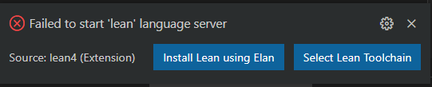
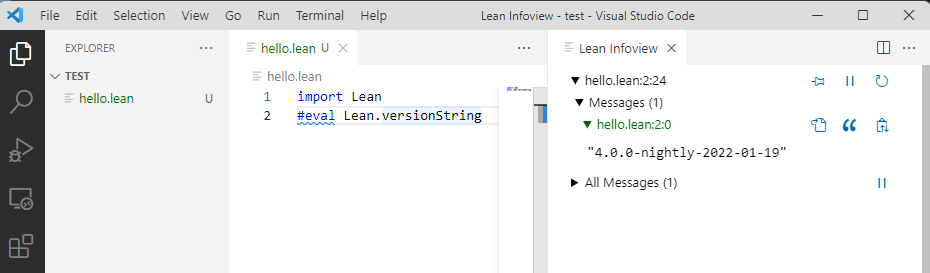

What is Lean
Lean is a functional programming language that makes it easy to write correct and maintainable code. You can also use Lean as an interactive theorem prover.
Lean programming primarily involves defining types and functions. This allows your focus to remain on the problem domain and manipulating its data, rather than the details of programming.
-- Defines a function that takes a name and produces a greeting.
def getGreeting (name : String) := s!"Hello, {name}! Isn't Lean great?"
-- The `main` function is the entry point of your program.
-- Its type is `IO Unit` because it can perform `IO` operations (side effects).
def main : IO Unit :=
-- Define a list of names
let names := ["Sebastian", "Leo", "Daniel"]
-- Map each name to a greeting
let greetings := names.map getGreeting
-- Print the list of greetings
for greeting in greetings do
IO.println greeting
Lean has numerous features, including:
- Type inference
- First-class functions
- Powerful data types
- Pattern matching
- Type classes
- Extensible syntax
- Hygienic macros
- Dependent types
- Metaprogramming framework
- Multithreading
- Verification: you can prove properties of your functions using Lean itself
Tour of Lean
The best way to learn about Lean is to read and write Lean code. This article will act as a tour through some of the key features of the Lean language and give you some code snippets that you can execute on your machine. To learn about setting up a development environment, check out Setting Up Lean.
There are two primary concepts in Lean: functions and types. This tour will emphasize features of the language which fall into these two concepts.
Functions and Namespaces
The most fundamental pieces of any Lean program are functions organized into namespaces.
Functions perform work on inputs to produce outputs,
and they are organized under namespaces,
which are the primary way you group things in Lean.
They are defined using the def command,
which give the function a name and define its arguments.
namespace BasicFunctions
-- The `#eval` command evaluates an expression on the fly and prints the result.
#eval 2+2
-- You use 'def' to define a function. This one accepts a natural number
-- and returns a natural number.
-- Parentheses are optional for function arguments, except for when
-- you use an explicit type annotation.
-- Lean can often infer the type of the function's arguments.
def sampleFunction1 x := x*x + 3
-- Apply the function, naming the function return result using 'def'.
-- The variable type is inferred from the function return type.
def result1 := sampleFunction1 4573
-- This line uses an interpolated string to print the result. Expressions inside
-- braces `{}` are converted into strings using the polymorphic method `toString`
#eval println! "The result of squaring the integer 4573 and adding 3 is {result1}"
-- When needed, annotate the type of a parameter name using '(argument : type)'.
def sampleFunction2 (x : Nat) := 2*x*x - x + 3
def result2 := sampleFunction2 (7 + 4)
#eval println! "The result of applying the 2nd sample function to (7 + 4) is {result2}"
-- Conditionals use if/then/else
def sampleFunction3 (x : Int) :=
if x > 100 then
2*x*x - x + 3
else
2*x*x + x - 37
#eval println! "The result of applying sampleFunction3 to 2 is {sampleFunction3 2}"
end BasicFunctions
-- Lean has first-class functions.
-- `twice` takes two arguments `f` and `a` where
-- `f` is a function from natural numbers to natural numbers, and
-- `a` is a natural number.
def twice (f : Nat → Nat) (a : Nat) :=
f (f a)
-- `fun` is used to declare anonymous functions
#eval twice (fun x => x + 2) 10
-- You can prove theorems about your functions.
-- The following theorem states that for any natural number `a`,
-- adding 2 twice produces a value equal to `a + 4`.
theorem twiceAdd2 (a : Nat) : twice (fun x => x + 2) a = a + 4 :=
-- The proof is by reflexivity. Lean "symbolically" reduces both sides of the equality
-- until they are identical.
rfl
-- `(· + 2)` is syntax sugar for `(fun x => x + 2)`. The parentheses + `·` notation
-- is useful for defining simple anonymous functions.
#eval twice (· + 2) 10
-- Enumerated types are a special case of inductive types in Lean,
-- which we will learn about later.
-- The following command creates a new type `Weekday`.
inductive Weekday where
| sunday : Weekday
| monday : Weekday
| tuesday : Weekday
| wednesday : Weekday
| thursday : Weekday
| friday : Weekday
| saturday : Weekday
-- `Weekday` has 7 constructors/elements.
-- The constructors live in the `Weekday` namespace.
-- Think of `sunday`, `monday`, …, `saturday` as being distinct elements of `Weekday`,
-- with no other distinguishing properties.
-- The command `#check` prints the type of a term in Lean.
#check Weekday.sunday
#check Weekday.monday
-- The `open` command opens a namespace, making all declarations in it accessible without
-- qualification.
open Weekday
#check sunday
#check tuesday
-- You can define functions by pattern matching.
-- The following function converts a `Weekday` into a natural number.
def natOfWeekday (d : Weekday) : Nat :=
match d with
| sunday => 1
| monday => 2
| tuesday => 3
| wednesday => 4
| thursday => 5
| friday => 6
| saturday => 7
#eval natOfWeekday tuesday
def isMonday : Weekday → Bool :=
-- `fun` + `match` is a common idiom.
-- The following expression is syntax sugar for
-- `fun d => match d with | monday => true | _ => false`.
fun
| monday => true
| _ => false
#eval isMonday monday
#eval isMonday sunday
-- Lean has support for type classes and polymorphic methods.
-- The `toString` method converts a value into a `String`.
#eval toString 10
#eval toString (10, 20)
-- The method `toString` converts values of any type that implements
-- the class `ToString`.
-- You can implement instances of `ToString` for your own types.
instance : ToString Weekday where
toString (d : Weekday) : String :=
match d with
| sunday => "Sunday"
| monday => "Monday"
| tuesday => "Tuesday"
| wednesday => "Wednesday"
| thursday => "Thursday"
| friday => "Friday"
| saturday => "Saturday"
#eval toString (sunday, 10)
def Weekday.next (d : Weekday) : Weekday :=
match d with
| sunday => monday
| monday => tuesday
| tuesday => wednesday
| wednesday => thursday
| thursday => friday
| friday => saturday
| saturday => sunday
#eval Weekday.next Weekday.wednesday
-- Since the `Weekday` namespace has already been opened, you can also write
#eval next wednesday
-- Matching on a parameter like in the previous definition
-- is so common that Lean provides syntax sugar for it. The following
-- function uses it.
def Weekday.previous : Weekday -> Weekday
| sunday => saturday
| monday => sunday
| tuesday => monday
| wednesday => tuesday
| thursday => wednesday
| friday => thursday
| saturday => friday
#eval next (previous wednesday)
-- We can prove that for any `Weekday` `d`, `next (previous d) = d`
theorem Weekday.nextOfPrevious (d : Weekday) : next (previous d) = d :=
match d with
| sunday => rfl
| monday => rfl
| tuesday => rfl
| wednesday => rfl
| thursday => rfl
| friday => rfl
| saturday => rfl
-- You can automate definitions such as `Weekday.nextOfPrevious`
-- using metaprogramming (or "tactics").
theorem Weekday.nextOfPrevious' (d : Weekday) : next (previous d) = d := by
cases d -- A proof by case distinction
all_goals rfl -- Each case is solved using `rfl`
Supported Platforms
Tier 1
Platforms built & tested by our CI, available as nightly & stable releases via elan (see above)
- x86-64 Linux with glibc 2.27+
- x86-64 macOS 10.15+
- x86-64 Windows 10+
Tier 2
Platforms cross-compiled but not tested by our CI, available as nightly & stable releases
Releases may be silently broken due to the lack of automated testing. Issue reports and fixes are welcome.
- aarch64 Linux with glibc 2.27+
- aarch64 (M1) macOS
Setting Up Lean
There are currently two ways to set up a Lean 4 development environment:
- basic setup (Linux/macOS/Windows): uses
elan+ your preinstalled editor - Nix setup (Linux/macOS/WSL): uses the Nix package manager for installing all dependencies localized to your project
See also the quickstart instructions for using the basic setup with VS Code as the editor.
Basic Setup
Release builds for all supported platforms are available at https://github.com/leanprover/lean4/releases.
Instead of downloading these and setting up the paths manually, however, it is recommended to use the Lean version manager elan instead:
$ elan self update # in case you haven't updated elan in a while
# download & activate latest Lean 4 release (https://github.com/leanprover/lean4/releases)
$ elan default leanprover/lean4:stable
# alternatively, use the latest nightly build (https://github.com/leanprover/lean4-nightly/releases)
$ elan default leanprover/lean4:nightly
# alternatively, activate Lean 4 in current directory only
$ elan override set leanprover/lean4:stable
lake
Lean 4 comes with a package manager named lake.
Use lake init foo to initialize a Lean package foo in the current directory, and lake build to typecheck and build it as well as all its dependencies. Use lake help to learn about further commands.
The general directory structure of a package foo is
lakefile.lean # package configuration
lean-toolchain # specifies the lean version to use
Foo.lean # main file, import via `import Foo`
Foo/
A.lean # further files, import via e.g. `import Foo.A`
A/... # further nesting
build/ # `lake` build output directory
After running lake build you will see a binary named ./build/bin/foo and when you run it you should see the output:
Hello, world!
Editing
Lean implements the Language Server Protocol that can be used for interactive development in Emacs, VS Code, and possibly other editors.
Changes must be saved to be visible in other files, which must then be invalidated using an editor command (see links above).
Nix Setup
The alternative setup based on Nix provides a perfectly reproducible development environment for your project from the Lean version down to the editor and Lean extension. However, it is still experimental and subject to change; in particular, it is heavily based on an unreleased version of Nix enabling Nix Flakes. The setup has been tested on NixOS, other Linux distributions, and macOS.
After installing (any version of) Nix (https://nixos.org/download.html), you can easily open a shell with the particular pre-release version of Nix needed by and tested with our setup (called the "Lean shell" from here on):
$ nix-shell https://github.com/leanprover/lean4/archive/master.tar.gz -A nix
While this shell is sufficient for executing the steps below, it is recommended to also set the following options in /etc/nix/nix.conf (nix.extraOptions in NixOS):
max-jobs = auto # Allow building multiple derivations in parallel
keep-outputs = true # Do not garbage-collect build time-only dependencies (e.g. clang)
# Allow fetching build results from the Lean Cachix cache
trusted-substituters = https://lean4.cachix.org/
trusted-public-keys = cache.nixos.org-1:6NCHdD59X431o0gWypbMrAURkbJ16ZPMQFGspcDShjY= lean4.cachix.org-1:mawtxSxcaiWE24xCXXgh3qnvlTkyU7evRRnGeAhD4Wk=
On a multi-user installation of Nix (the default), you need to restart the Nix daemon afterwards:
sudo pkill nix-daemon
The Cachix integration will magically beam any build steps already executed by the CI right onto your machine when calling Nix commands in the shell opened above. It can be set up analogously as a cache for your own project.
Note: Your system Nix might print warnings about not knowing some of the settings used by the Lean shell Nix, which can be ignored.
Basic Commands
From a Lean shell, run
$ nix flake new mypkg -t github:leanprover/lean4
to create a new Lean package in directory mypkg using the latest commit of Lean 4.
Such packages follow the same directory layout as described in the basic setup above, except for a lakefile.lean replaced by a flake.nix file set up so you can run Nix commands on it, for example:
$ nix build # build package and all dependencies
$ nix build .#executable # compile `main` definition into executable (after you've added one)
$ nix run .#emacs-dev # open a pinned version of Emacs with lean4-mode fully set up
$ nix run .#emacs-dev MyPackage.lean # arguments can be passed as well, e.g. the file to open
$ nix run .#vscode-dev MyPackage.lean # ditto, using VS Code
Note that if you rename MyPackage.lean, you also have to adjust the name attribute in flake.nix accordingly.
Also note that if you turn the package into a Git repository, only tracked files will be visible to Nix.
As in the basic setup, changes need to be saved to be visible in other files, which have then to be invalidated via an editor command.
If you don't want to or cannot start the pinned editor from Nix, e.g. because you're running Lean inside WSL/a container/on a different machine, you can manually point your editor at the lean wrapper script the commands above use internally:
$ nix build .#lean-dev -o result-lean-dev
The resulting ./result-lean-dev/bin/lean script essentially runs nix run .#lean in the current project's root directory when you open a Lean file or use the "refresh dependencies" command such that the correct Lean version for that project is executed.
This includes selecting the correct stage of Lean (which it will compile on the fly, though without progress output) if you are working on Lean itself.
Package dependencies can be added as further input flakes and passed to the deps list of buildLeanPackage. Example: https://github.com/Kha/testpkg2/blob/master/flake.nix#L5
For hacking, it can be useful to temporarily override an input with a local checkout/different version of a dependency:
$ nix build --override-input somedep path/to/somedep
On a build error, Nix will show the last 10 lines of the output by default. You can pass -L to nix build to show all lines, or pass the shown *.drv path to nix log to show the full log after the fact.
Keeping all outputs ever built on a machine alive can accumulate to quite impressive amounts of disk space, so you might want to trigger the Nix GC when /nix/store/ has grown too large:
nix-collect-garbage
This will remove everything not reachable from "GC roots" such as the ./result symlink created by nix build.
Note that the package information in flake.nix is currently completely independent from lakefile.lean used in the basic setup.
Unifying the two formats is TBD.
Quickstart
These instructions will walk you through setting up Lean using the "basic" setup and VS Code as the editor. See Setup for other ways, supported platforms, and more details on setting up Lean.
-
Install VS Code.
-
Launch VS Code and install the
lean4extension.
-
Create a new file using "File > New File" and click the
Select a languagelink and type inlean4and hit ENTER. You should see the following popup: Click the "Install Lean using Elan" link and follow the progress pressing ENTER in the terminal window to install lean. You should see some progress output like this:
info: syncing channel updates for 'nightly' info: latest update on nightly, lean version nightly-2021-12-05 info: downloading component 'lean' -
While it is installing you can paste the following Lean program into the new file:
#eval Lean.versionStringWhen the install finishes the Lean Language Server should start automatically and you should get a syntax-highlighting and a "Lean Infoview" popping up on the right. You will see the output of the #eval statement when you place your cursor at the end of the #eval statement.

You are set up!
Create a Lean Project
You can now create a Lean project in a new folder. Run lake init foo from the "View > Terminal" to create a package, followed by lake build to get an executable version of your Lean program.
On Linux/macOS, you first have to follow the instructions printed by the Lean installation or log out and in again for the Lean executables to be available in you terminal.
Note: Packages have to be opened using "File > Open Folder..." for imports to work.
Saved changes are visible in other files after running "Lean 4: Refresh File Dependencies" (Ctrl+Shift+X).
Troubleshooting
The InfoView says "Waiting for Lean server to start..." forever.
Check that the VS Code Terminal is not prompting you with Press ENTER key to start Lean:. If so click in the terminal window and pressthe ENTER key.
If that doesn't work try also running the VS Code command Developer: Reload Window.
Theorem Proving in Lean
We strongly encourage you to read the book Theorem Proving in Lean. Many Lean users consider it to be the Lean Bible.
Examples
- Palindromes
- A Certified Type Checker
- The Well-Typed Interpreter
- Dependent de Bruijn Indices
- Parametric Higher-Order Abstract Syntax
Organizational features
In this section we introduce some organizational features of Lean that are not a part of its kernel per se, but make it possible to work in the framework more efficiently.
Variables and Sections
Consider the following three function definitions:
def compose (α β γ : Type) (g : β → γ) (f : α → β) (x : α) : γ :=
g (f x)
def doTwice (α : Type) (h : α → α) (x : α) : α :=
h (h x)
def doThrice (α : Type) (h : α → α) (x : α) : α :=
h (h (h x))
Lean provides us with the variable command to make such declarations look more compact:
variable (α β γ : Type)
def compose (g : β → γ) (f : α → β) (x : α) : γ :=
g (f x)
def doTwice (h : α → α) (x : α) : α :=
h (h x)
def doThrice (h : α → α) (x : α) : α :=
h (h (h x))
We can declare variables of any type, not just Type itself:
variable (α β γ : Type)
variable (g : β → γ) (f : α → β) (h : α → α)
variable (x : α)
def compose := g (f x)
def doTwice := h (h x)
def doThrice := h (h (h x))
#print compose
#print doTwice
#print doThrice
Printing them out shows that all three groups of definitions have exactly the same effect.
The variable command instructs Lean to insert the declared variables as bound variables in definitions that refer to them.
Lean is smart enough to figure out which variables are used explicitly or implicitly in a definition. We can therefore proceed as
though α, β, γ, g, f, h, and x are fixed objects when we write our definitions, and let Lean abstract
the definitions for us automatically.
When declared in this way, a variable stays in scope until the end of the file we are working on.
Sometimes, however, it is useful to limit the scope of a variable. For that purpose, Lean provides the notion of a section:
section useful
variable (α β γ : Type)
variable (g : β → γ) (f : α → β) (h : α → α)
variable (x : α)
def compose := g (f x)
def doTwice := h (h x)
def doThrice := h (h (h x))
end useful
When the section is closed, the variables go out of scope, and become nothing more than a distant memory.
You do not have to indent the lines within a section. Nor do you have to name a section, which is to say,
you can use an anonymous section / end pair.
If you do name a section, however, you have to close it using the same name.
Sections can also be nested, which allows you to declare new variables incrementally.
Namespaces
Lean provides us with the ability to group definitions into nested, hierarchical namespaces:
namespace Foo
def a : Nat := 5
def f (x : Nat) : Nat := x + 7
def fa : Nat := f a
def ffa : Nat := f (f a)
#check a
#check f
#check fa
#check ffa
#check Foo.fa
end Foo
-- #check a -- error
-- #check f -- error
#check Foo.a
#check Foo.f
#check Foo.fa
#check Foo.ffa
open Foo
#check a
#check f
#check fa
#check Foo.fa
When we declare that we are working in the namespace Foo, every identifier we declare has
a full name with prefix "Foo." Within the namespace, we can refer to identifiers
by their shorter names, but once we end the namespace, we have to use the longer names.
The open command brings the shorter names into the current context. Often, when we import a
module, we will want to open one or more of the namespaces it contains, to have access to the short identifiers.
But sometimes we will want to leave this information hidden, for example, when they conflict with
identifiers in another namespace we want to use. Thus namespaces give us a way to manage our working environment.
For example, Lean groups definitions and theorems involving lists into a namespace List.
#check List.nil
#check List.cons
#check List.map
We will discuss their types, below. The command open List allows us to use the shorter names:
open List
#check nil
#check cons
#check map
Like sections, namespaces can be nested:
namespace Foo
def a : Nat := 5
def f (x : Nat) : Nat := x + 7
def fa : Nat := f a
namespace Bar
def ffa : Nat := f (f a)
#check fa
#check ffa
end Bar
#check fa
#check Bar.ffa
end Foo
#check Foo.fa
#check Foo.Bar.ffa
open Foo
#check fa
#check Bar.ffa
Namespaces that have been closed can later be reopened, even in another file:
namespace Foo
def a : Nat := 5
def f (x : Nat) : Nat := x + 7
def fa : Nat := f a
end Foo
#check Foo.a
#check Foo.f
namespace Foo
def ffa : Nat := f (f a)
end Foo
Like sections, nested namespaces have to be closed in the order they are opened.
Namespaces and sections serve different purposes: namespaces organize data and sections declare variables for insertion in definitions.
Sections are also useful for delimiting the scope of commands such as set_option and open.
In many respects, however, a namespace ... end block behaves the same as a section ... end block.
In particular, if you use the variable command within a namespace, its scope is limited to the namespace.
Similarly, if you use an open command within a namespace, its effects disappear when the namespace is closed.
Implicit Arguments
Suppose we define the compose function as.
def compose (α β γ : Type) (g : β → γ) (f : α → β) (x : α) : γ :=
g (f x)
The function compose takes three types, α, β, and γ, and two functions, g : β → γ and f : α → β, a value x : α, and
returns g (f x), the composition of g and f.
We say compose is polymorphic over types α, β, and γ. Now, let's use compose:
def compose (α β γ : Type) (g : β → γ) (f : α → β) (x : α) : γ :=
g (f x)
def double (x : Nat) := 2*x
def triple (x : Nat) := 3*x
#check compose Nat Nat Nat double triple 10 -- Nat
#eval compose Nat Nat Nat double triple 10 -- 60
def appendWorld (s : String) := s ++ "world"
#check String.length -- String → Nat
#check compose String String Nat String.length appendWorld "hello" -- Nat
#eval compose String String Nat String.length appendWorld "hello" -- 10
Because compose is polymorphic over types α, β, and γ, we have to provide them in the examples above.
But this information is redundant: one can infer the types from the arguments g and f.
This is a central feature of dependent type theory: terms carry a lot of information, and often some of that information can be inferred from the context.
In Lean, one uses an underscore, _, to specify that the system should fill in the information automatically.
def compose (α β γ : Type) (g : β → γ) (f : α → β) (x : α) : γ :=
g (f x)
def double (x : Nat) := 2*x
def triple (x : Nat) := 3*x
#check compose _ _ _ double triple 10 -- Nat
#eval compose Nat Nat Nat double triple 10 -- 60
def appendWorld (s : String) := s ++ "world"
#check String.length -- String → Nat
#check compose _ _ _ String.length appendWorld "hello" -- Nat
#eval compose _ _ _ String.length appendWorld "hello" -- 10
It is still tedious, however, to type all these underscores. When a function takes an argument that can generally be inferred from context, Lean allows us to specify that this argument should, by default, be left implicit. This is done by putting the arguments in curly braces, as follows:
def compose {α β γ : Type} (g : β → γ) (f : α → β) (x : α) : γ :=
g (f x)
def double (x : Nat) := 2*x
def triple (x : Nat) := 3*x
#check compose double triple 10 -- Nat
#eval compose double triple 10 -- 60
def appendWorld (s : String) := s ++ "world"
#check String.length -- String → Nat
#check compose String.length appendWorld "hello" -- Nat
#eval compose String.length appendWorld "hello" -- 10
All that has changed are the braces around α β γ: Type.
It makes these three arguments implicit. Notationally, this hides the specification of the type,
making it look as though compose simply takes 3 arguments.
Variables can also be specified as implicit when they are declared with
the variables command:
universe u
section
variable {α : Type u}
variable (x : α)
def ident := x
end
variable (α β : Type u)
variable (a : α) (b : β)
#check ident
#check ident a
#check ident b
This definition of ident here has the same effect as the one above.
Lean has very complex mechanisms for instantiating implicit arguments, and we will see that they can be used to infer function types, predicates, and even proofs.
The process of instantiating these "holes," or "placeholders," in a term is part of a bigger process called elaboration.
The presence of implicit arguments means that at times there may be insufficient information to fix the meaning of an expression precisely.
An expression like ident is said to be polymorphic, because it can take on different meanings in different contexts.
One can always specify the type T of an expression e by writing (e : T).
This instructs Lean's elaborator to use the value T as the type of e when trying to elaborate it.
In the following example, this mechanism is used to specify the desired types of the expressions ident.
def ident {α : Type u} (a : α) : α := a
#check (ident : Nat → Nat) -- Nat → Nat
Numerals are overloaded in Lean, but when the type of a numeral cannot be inferred, Lean assumes, by default, that it is a natural number.
So the expressions in the first two #check commands below are elaborated in the same way, whereas the third #check command interprets 2 as an integer.
#check 2 -- Nat
#check (2 : Nat) -- Nat
#check (2 : Int) -- Int
Sometimes, however, we may find ourselves in a situation where we have declared an argument to a function to be implicit,
but now want to provide the argument explicitly. If foo is such a function, the notation @foo denotes the same function with all
the arguments made explicit.
def ident {α : Type u} (a : α) : α := a
variable (α β : Type)
#check @ident -- {α : Type u} → α → α
#check @ident α -- α → α
#check @ident β -- β → β
#check @ident Nat -- Nat → Nat
#check @ident Bool true -- Bool
Notice that now the first #check command gives the type of the identifier, ident, without inserting any placeholders.
Moreover, the output indicates that the first argument is implicit.
Named arguments enable you to specify an argument for a parameter by matching the argument with its name rather than with its position in the parameter list. You can use them to specify explicit and implicit arguments. If you don't remember the order of the parameters but know their names, you can send the arguments in any order. You may also provide the value for an implicit parameter when Lean failed to infer it. Named arguments also improve the readability of your code by identifying what each argument represents.
def ident {α : Type u} (a : α) : α := a
#check ident (α := Nat) -- Nat → Nat
#check ident (α := Bool) -- Bool → Bool
Auto Bound Implicit Arguments
In the previous section, we have shown how implicit arguments make functions more convenient to use.
However, functions such as compose are still quite verbose to define. Note that the universe
polymorphic compose is even more verbose than the one previously defined.
universe u v w
def compose {α : Type u} {β : Type v} {γ : Type w}
(g : β → γ) (f : α → β) (x : α) : γ :=
g (f x)
You can avoid the universe command by providing the universe parameters when defining compose.
def compose.{u, v, w}
{α : Type u} {β : Type v} {γ : Type w}
(g : β → γ) (f : α → β) (x : α) : γ :=
g (f x)
Lean 4 supports a new feature called auto bound implicit arguments. It makes functions such as
compose much more convenient to write. When Lean processes the header of a declaration,
any unbound identifier is automatically added as an implicit argument if it is a single lower case or
greek letter. With this feature, we can write compose as
def compose (g : β → γ) (f : α → β) (x : α) : γ :=
g (f x)
#check @compose
-- {β : Sort u_1} → {γ : Sort u_2} → {α : Sort u_3} → (β → γ) → (α → β) → α → γ
Note that, Lean inferred a more general type using Sort instead of Type.
Although we love this feature and use it extensively when implementing Lean,
we realize some users may feel uncomfortable with it. Thus, you can disable it using
the command set_option autoImplicit false.
set_option autoImplicit false
/- The following definition produces `unknown identifier` errors -/
-- def compose (g : β → γ) (f : α → β) (x : α) : γ :=
-- g (f x)
Syntax Extensions
Lean's syntax can be extended and customized
by users at every level, ranging from basic "mixfix" notations to
custom elaborators. In fact, all builtin syntax is parsed and
processed using the same mechanisms and APIs open to users. In this
section, we will describe and explain the various extension points.
Significant syntax extensions already builtin into Lean such as the
do notation are described in subsections.
While introducing new notations is a relatively rare feature in programming languages and sometimes even frowned upon because of its potential to obscure code, it is an invaluable tool in formalization for expressing established conventions and notations of the respective field succinctly in code. Going beyond basic notations, Lean's ability to factor out common boilerplate code into (well-behaved) macros and to embed entire custom domain specific languages (DSLs) to textually encode subproblems efficiently and readably can be of great benefit to both programmers and proof engineers alike.
Syntax and Macros
Elaborators
TODO. See Lean Together 2021: Metaprogramming in Lean 4 for an overview as well the continuation about tactic programming. For more information on antiquotations, see also §4.1 of Beyond Notations: Hygienic Macro Expansion for Theorem Proving Languages.
The do notation
Lean is a pure functional programming language, but you can write effectful code using the do embedded domain specific language (DSL). The following simple program prints two strings "hello" and "world" in the standard output and terminates with exit code 0. Note that the type of the program is IO UInt32. You can read this type as the type of values that perform input-output effects and produce a value of type UInt32.
def main : IO UInt32 := do
IO.println "hello"
IO.println "world"
return 0
The type of IO.println is String → IO Unit. That is, it is a function from String to IO Unit which indicates it may perform input-output effects and produce a value of type Unit. We often say that functions that may perform effects are methods.
We also say a method application, such as IO.println "hello" is an action.
Note that the examples above also demonstrates that braceless do blocks are whitespace sensitive.
If you like ;s and curly braces, you can write the example above as
def main : IO UInt32 := do {
IO.println "hello";
IO.println "world";
return 0;
}
Semicolons can be used even when curly braces are not used. They are particularly useful when you want to "pack" more than one action in a single line.
def main : IO UInt32 := do
IO.println "hello"; IO.println "world"
return 0
Whitespace sensitivity in programming languages is a controversial topic among programmers. You should use your own style. We, the Lean developers, love the braceless and semicolon-free style. We believe it is clean and beautiful.
The do DSL expands into the core Lean language. Let's inspect the different components using the commands #print and #check.
def main : IO UInt32 := do
IO.println "hello"
IO.println "world"
return 0
#check IO.println "hello"
-- IO Unit
#print main
-- Output contains the infix operator `>>=` and `pure`
-- The following `set_option` disables notation such as `>>=` in the output
set_option pp.notation false in
#print main
-- Output contains `bind` and `pure`
#print bind
-- bind : {m : Type u → Type v} → [self : Bind m] → {α β : Type u} →
-- m α → (α → m β) → m β
#print pure
-- pure : {m : Type u → Type v} → [self : Pure m] → {α : Type u} →
-- α → m α
-- IO implements the type classes `Bind` and `Pure`.
#check (inferInstance : Bind IO)
#check (inferInstance : Pure IO)
The types of bind and pure may look daunting at first sight.
They both have many implicit arguments. Let's focus first on the explicit arguments.
bind has two explicit arguments m α and α → m β. The first one should
be viewed as an action with effects m and producing a value of type α.
The second is a function that takes a value of type α and produces an action
with effects m and a value of type β. The result is m β. The method bind is composing
these two actions. We often say bind is an abstract semicolon. The method pure converts
a value α into an action that produces an action m α.
Here is the same function being defined using bind and pure without the do DSL.
def main : IO UInt32 :=
bind (IO.println "hello") fun _ =>
bind (IO.println "world") fun _ =>
pure 0
The notations let x <- action1; action2 and let x ← action1; action2 are just syntax sugar for bind action1 fun x => action2.
Here is a small example using it.
def isGreaterThan0 (x : Nat) : IO Bool := do
IO.println s!"value: {x}"
return x > 0
def f (x : Nat) : IO Unit := do
let c <- isGreaterThan0 x
if c then
IO.println s!"{x} is greater than 0"
else
pure ()
#eval f 10
-- value: 10
-- 10 is greater than 0
Nested actions
Note that we cannot write if isGreaterThan0 x then ... else ... because the condition in a if-then-else is a pure value without effects, but isGreaterThan0 x has type IO Bool. You can use the nested action notation to avoid this annoyance. Here is an equivalent definition for f using a nested action.
def isGreaterThan0 (x : Nat) : IO Bool := do
IO.println s!"x: {x}"
return x > 0
def f (x : Nat) : IO Unit := do
if (<- isGreaterThan0 x) then
IO.println s!"{x} is greater than 0"
else
pure ()
#print f
Lean "lifts" the nested actions and introduces the bind for us.
Here is an example with two nested actions. Note that both actions are executed
even if x = 0.
def isGreaterThan0 (x : Nat) : IO Bool := do
IO.println s!"x: {x}"
return x > 0
def f (x y : Nat) : IO Unit := do
if (<- isGreaterThan0 x) && (<- isGreaterThan0 y) then
IO.println s!"{x} and {y} are greater than 0"
else
pure ()
#eval f 0 10
-- value: 0
-- value: 10
-- The function `f` above is equivalent to
def g (x y : Nat) : IO Unit := do
let c1 <- isGreaterThan0 x
let c2 <- isGreaterThan0 y
if c1 && c2 then
IO.println s!"{x} and {y} are greater than 0"
else
pure ()
theorem fgEqual : f = g :=
rfl -- proof by reflexivity
Here are two ways to achieve the short-circuit semantics in the example above
def isGreaterThan0 (x : Nat) : IO Bool := do
IO.println s!"x: {x}"
return x > 0
def f1 (x y : Nat) : IO Unit := do
if (<- isGreaterThan0 x <&&> isGreaterThan0 y) then
IO.println s!"{x} and {y} are greater than 0"
else
pure ()
-- `<&&>` is the effectful version of `&&`
-- Given `x y : IO Bool`, `x <&&> y` : m Bool`
-- It only executes `y` if `x` returns `true`.
#eval f1 0 10
-- value: 0
#eval f1 1 10
-- value: 1
-- value: 10
-- 1 and 10 are greater than 0
def f2 (x y : Nat) : IO Unit := do
if (<- isGreaterThan0 x) then
if (<- isGreaterThan0 y) then
IO.println s!"{x} and {y} are greater than 0"
else
pure ()
else
pure ()
if-then notation
In the do DSL, we can write if c then action as a shorthand for if c then action else pure (). Here is the method f2 using this shorthand.
def isGreaterThan0 (x : Nat) : IO Bool := do
IO.println s!"x: {x}"
return x > 0
def f2 (x y : Nat) : IO Unit := do
if (<- isGreaterThan0 x) then
if (<- isGreaterThan0 y) then
IO.println s!"{x} and {y} are greater than 0"
Reassignments
When writing effectful code, it is natural to think imperatively.
For example, suppose we want to create an empty array xs,
add 0 if some condition holds, add 1 if another condition holds,
and then print it. In the following example, we use variable
"shadowing" to simulate this kind of "update".
def f (b1 b2 : Bool) : IO Unit := do
let xs := #[]
let xs := if b1 then xs.push 0 else xs
let xs := if b2 then xs.push 1 else xs
IO.println xs
#eval f true true
-- #[0, 1]
#eval f false true
-- #[1]
#eval f true false
-- #[0]
#eval f false false
-- #[]
We can use tuples to simulate updates on multiple variables.
def f (b1 b2 : Bool) : IO Unit := do
let xs := #[]
let ys := #[]
let (xs, ys) := if b1 then (xs.push 0, ys) else (xs, ys.push 0)
let (xs, ys) := if b2 then (xs.push 1, ys) else (xs, ys.push 1)
IO.println s!"xs: {xs}, ys: {ys}"
#eval f true false
-- xs: #[0], ys: #[1]
We can also simulate the control-flow above using join-points.
A join-point is a let that is always tail called and fully applied.
The Lean compiler implements them using gotos.
Here is the same example using join-points.
def f (b1 b2 : Bool) : IO Unit := do
let jp1 xs ys := IO.println s!"xs: {xs}, ys: {ys}"
let jp2 xs ys := if b2 then jp1 (xs.push 1) ys else jp1 xs (ys.push 1)
let xs := #[]
let ys := #[]
if b1 then jp2 (xs.push 0) ys else jp2 xs (ys.push 0)
#eval f true false
-- xs: #[0], ys: #[1]
You can capture complex control-flow using join-points.
The do DSL offers the variable reassignment feature to make this kind of code more comfortable to write. In the following example, the mut modifier at let mut xs := #[] indicates that variable xs can be reassigned. The example contains two reassignments xs := xs.push 0 and xs := xs.push 1. The reassignments are compiled using join-points. There is no hidden state being updated.
def f (b1 b2 : Bool) : IO Unit := do
let mut xs := #[]
if b1 then xs := xs.push 0
if b2 then xs := xs.push 1
IO.println xs
#eval f true true
-- #[0, 1]
The notation x <- action reassigns x with the value produced by the action. It is equivalent to x := (<- action)
Iteration
The do DSL provides a unified notation for iterating over datastructures. Here are a few examples.
def sum (xs : Array Nat) : IO Nat := do
let mut s := 0
for x in xs do
IO.println s!"x: {x}"
s := s + x
return s
#eval sum #[1, 2, 3]
-- x: 1
-- x: 2
-- x: 3
-- 6
-- We can write pure code using the `Id.run <| do` DSL too.
def sum' (xs : Array Nat) : Nat := Id.run <| do
let mut s := 0
for x in xs do
s := s + x
return s
#eval sum' #[1, 2, 3]
-- 6
def sumEven (xs : Array Nat) : IO Nat := do
let mut s := 0
for x in xs do
if x % 2 == 0 then
IO.println s!"x: {x}"
s := s + x
return s
#eval sumEven #[1, 2, 3, 6]
-- x: 2
-- x: 6
-- 8
def splitEvenOdd (xs : List Nat) : IO Unit := do
let mut evens := #[]
let mut odds := #[]
for x in xs do
if x % 2 == 0 then
evens := evens.push x
else
odds := odds.push x
IO.println s!"evens: {evens}, odds: {odds}"
#eval splitEvenOdd [1, 2, 3, 4]
-- evens: #[2, 4], odds: #[1, 3]
def findNatLessThan (x : Nat) (p : Nat → Bool) : IO Nat := do
-- [:x] is notation for the range [0, x)
for i in [:x] do
if p i then
return i -- `return` from the `do` block
throw (IO.userError "value not found")
#eval findNatLessThan 10 (fun x => x > 5 && x % 4 == 0)
-- 8
def sumOddUpTo (xs : List Nat) (threshold : Nat) : IO Nat := do
let mut s := 0
for x in xs do
if x % 2 == 0 then
continue -- it behaves like the `continue` statement in imperative languages
IO.println s!"x: {x}"
s := s + x
if s > threshold then
break -- it behaves like the `break` statement in imperative languages
IO.println s!"result: {s}"
return s
#eval sumOddUpTo [2, 3, 4, 11, 20, 31, 41, 51, 107] 40
-- x: 3
-- x: 11
-- x: 31
-- result: 45
-- 45
TODO: describe forIn
Try-catch
TODO
Returning early from a failed match
Inside a do block, the pattern let _ ← <success> | <fail> will continue with the rest of the block if the match on the left hand side succeeds, but will execute the right hand side and exit the block on failure:
def showUserInfo (getUsername getFavoriteColor : IO (Option String)) : IO Unit := do
let some n ← getUsername | IO.println "no username!"
IO.println s!"username: {n}"
let some c ← getFavoriteColor | IO.println "user didn't provide a favorite color!"
IO.println s!"favorite color: {c}"
-- username: JohnDoe
-- favorite color: red
#eval showUserInfo (pure <| some "JohnDoe") (pure <| some "red")
-- no username
#eval showUserInfo (pure none) (pure <| some "purple")
-- username: JaneDoe
-- user didn't provide a favorite color
#eval showUserInfo (pure <| some "JaneDoe") (pure none)
If-let
Inside a do block, users can employ the if let pattern to destructure actions:
def tryIncrement (getInput : IO (Option Nat)) : IO (Except String Nat) := do
if let some n ← getInput
then return Except.ok n.succ
else return Except.error "argument was `none`"
-- Except.ok 2
#eval tryIncrement (pure <| some 1)
-- Except.error "argument was `none`"
#eval tryIncrement (pure <| none)
Pattern matching
TODO
Monads
TODO
ReaderT
TODO
StateT
TODO
StateRefT
TODO
ExceptT
TODO
MonadLift and automatic lifting
TODO
Notations and Precedence
The most basic syntax extension commands allow introducing new (or overloading existing) prefix, infix, and postfix operators.
infixl:65 " + " => HAdd.hAdd -- left-associative
infix:50 " = " => Eq -- non-associative
infixr:80 " ^ " => HPow.hPow -- right-associative
prefix:100 "-" => Neg.neg
set_option quotPrecheck false
postfix:max "⁻¹" => Inv.inv
After the initial command name describing the operator kind (its
"fixity"), we give the parsing precedence of the operator preceded
by a colon :, then a new or existing token surrounded by double
quotes (the whitespace is used for pretty printing), then the function
this operator should be translated to after the arrow =>.
The precedence is a natural number describing how "tightly" an operator binds to its arguments, encoding the order of operations. We can make this more precise by looking at the commands above unfold to:
notation:65 lhs:65 " + " rhs:66 => HAdd.hAdd lhs rhs
notation:50 lhs:51 " = " rhs:51 => Eq lhs rhs
notation:80 lhs:81 " ^ " rhs:80 => HPow.hPow lhs rhs
notation:100 "-" arg:100 => Neg.neg arg
set_option quotPrecheck false
notation:1024 arg:1024 "⁻¹" => Inv.inv arg -- `max` is a shorthand for precedence 1024
It turns out that all commands from the first code block are in fact
command macros translating to the more general notation command.
We will learn about writing such macros below. Instead of a single
token, the notation command accepts a mixed sequence of tokens and
named term placeholders with precedences, which can be referenced on
the right-hand side of => and will be replaced by the respective
term parsed at that position. A placeholder with precedence p
accepts only notations with precedence at least p in that place.
Thus the string a + b + c cannot be parsed as the equivalent of a + (b + c) because the right-hand side operand of an infixl notation
has precedence one greater than the notation itself. In contrast,
infixr reuses the notation's precedence for the right-hand side
operand, so a ^ b ^ c can be parsed as a ^ (b ^ c). Note that if
we used notation directly to introduce an infix notation like
set_option quotPrecheck false
notation:65 lhs:65 " ~ " rhs:65 => wobble lhs rhs
where the precedences do not sufficiently determine associativity,
Lean's parser will default to right associativity. More precisely,
Lean's parser follows a local longest parse rule in the presence of
ambiguous grammars: when parsing the right-hand side of a ~ in a ~ b ~ c, it will continue parsing as long as possible (as the current
precedence allows), not stopping after b but parsing ~ c as well.
Thus the term is equivalent to a ~ (b ~ c).
As mentioned above, the notation command allows us to define
arbitrary mixfix syntax freely mixing tokens and placeholders.
set_option quotPrecheck false
notation:max "(" e ")" => e
notation:10 Γ " ⊢ " e " : " τ => Typing Γ e τ
Placeholders without precedence default to 0, i.e. they accept
notations of any precedence in their place. If two notations overlap,
we again apply the longest parse rule:
notation:65 a " + " b:66 " + " c:66 => a + b - c
#eval 1 + 2 + 3 -- 0
The new notation is preferred to the binary notation since the latter,
before chaining, would stop parsing after 1 + 2. If there are
multiple notations accepting the same longest parse, the choice will
be delayed until elaboration, which will fail unless exactly one
overload is type correct.
String interpolation
The s! prefix identifies a string literal as an interpolated string.
An interpolated string is a string literal that might contain interpolation expressions.
When an interpolated string is resolved to a result string, items with interpolation expressions are
replaced by the string representations of the expression results. The polymorphic method toString is used
to convert the value into a string.
String interpolation provides a more readable and convenient syntax to create formatted strings than a string composite formatting feature. The following example uses both features to produce the same output:
def name := "John"
def age := 28
#eval IO.println s!"Hello, {name}! Are you {age} years old?"
#eval IO.println ("Hello, " ++ name ++ "! Are you " ++ toString age ++ " years old?")
-- `println! <interpolated-string>` is a macro for `IO.println s!<interpolated-string>`
#eval println! "Hello, {name}! Are you {age} years old?"
Structure of an interpolated string
To identify a string literal as an interpolated string, prepend it with s!.
Terms inside braces {} are ordinary expressions whose type implements the type class ToString.
To include a curly brace { in your interpolated string, you must escape it using \{.
You can nest interpolated strings inside interpolated strings.
def vals := [1, 2, 3]
#eval IO.println s!"\{ vals := {vals} }"
#eval IO.println s!"variables: {vals.map (fun i => s!"x_{i}")}"
ToString instances
You can define a ToString instance for your own datatypes.
structure Person where
name : String
age : Nat
instance : ToString Person where
toString : Person -> String
| { name := n, age := v } => s!"\{ name := {n}, age := {v} }"
def person1 : Person := {
name := "John"
age := 28
}
#eval println! "person1: {person1}"
Macro Overview
The offical paper describing the mechanics behind Lean 4's macro system can be found in Beyond Notations: Hygienic Macro Expansion for Theorem Proving Languages by Sebastian Ullrich and Leonardo de Moura, and the accompanying repo with example code can be found in the paper's code supplement. The supplement also includes a working implementation of the macro expander, so it's a good case study for people interested in the details.
What is a macro in Lean?
A macro is a function that takes in a syntax tree and produces a new syntax tree. Macros are useful for many reasons, but two of the big ones are a) allowing users to extend the language with new syntactic constructs without having to actually expand the core language, and b) allowing users to automate tasks that would otherwise be extremely repetitive, time-consuming, and/or error-prone.
A motivating example is set builder notation. We would like to be able to write
the set of natural numbers 0, 1, and 2 as just {0, 1, 2}. However, Lean does
not natively support this syntax, and the actual definition of a set in Mathlib
does not let us just declare sets in this manner; naively using the set API
would force us to write Set.insert 1 (Set.insert 2 (Set.singleton 3)).
Instead, we can teach Lean's macro system to recognize {0, 1, 2} as a
shorthand for a composition of existing methods and let it do the repetitive
work of creating the Set.insert... invocation for us. In this way, we can have
our more readable and more convenient syntax without having to extend Lean
itself, and while retaining the simple insert/singleton API.
How macros are handled
The general procedure is as follows:
-
Lean parses a command, creating a Lean syntax tree which contains any unexpanded macros.
-
Lean repeats the cycle (elaboration ~> (macro hygiene and expansion) ~> elaboration...)
The cycle in step 2 repeats until there are no more macros which need to be expanded, and elaboration can finish normally. This repetition is required since macros can expand to other macros, and may expand to code that needs information from the elaborator. As you can see, the process of macro parsing and expansion is interleaved with the parsing and elaboration of non-macro code.
By default, macros in Lean are hygienic, which means the system avoids
accidental name capture when reusing the same name inside and outside the macro.
Users may occasionally want to disable hygiene, which can be accomplished with
the command set_option hygiene false. More in-depth information about hygiene
and how it's implemented in the official paper and supplement linked at the top
of this guide.
Elements of "a" macro (important types)
In the big picture, a macro has two components that must be implemented by the
user, parsers and syntax transformers, where the latter is a function that says
what the input syntax should expand to. There is a third component, syntax
categories, such as term, tactic, and command, but declaring a new syntax
category is not always necessary. When we say "parser" in the context of a
macro, we refer to the core type Lean.ParserDescr, which parses elements of
type Lean.Syntax, where Lean.Syntax represents elements of a Lean syntax
tree. Syntax transformers are functions of type Syntax -> MacroM Syntax. Lean
has a synonym for this type, which is simply Macro. MacroM is a monad that
carries state needed for macro expansion to work nicely, including the info
needed to implement hygiene.
As an example, we again refer to Mathlib's set builder notation:
/- Declares a parser -/
syntax (priority := high) "{" term,+ "}" : term
/- Declares two expansions/syntax transformers -/
macro_rules
| `({$x}) => `(Set.singleton $x)
| `({$x, $xs:term,*}) => `(Set.insert $x {$xs,*})
/- Provided `Set` has been imported (from Mathlib4), these are all we need for `{1, 2, 3}` to be valid notation to create a literal set -/
This example should also make clear the reason why macros (and pretty much all
of Lean 4's metaprogramming facilities) are functions that take an argument of
type Syntax e.g. Syntax -> MacroM Syntax; the leading syntax element is the
thing that actually triggers the macro expansion by matching with the declared
parser, and as a user, you will almost always be interested in inspecting and
transforming that initial syntax element (though there are cases in which it can
just be ignored, as in the parameter-less exfalso tactic).
Returning briefly to the API provided by Lean, Lean.Syntax, is pretty much
what you would expect a basic syntax tree type to look like. Below is a slightly
simplified representation which omits details in the atom and ident
constructors; users can create atoms and idents which comport with this
simplified representation using the mkAtom and mkIdent methods provided in
the Lean namespace.
inductive Syntax where
| missing : Syntax
| node (kind : SyntaxNodeKind) (args : Array Syntax) : Syntax
| atom : String -> Syntax
| ident : Name -> Syntax
For those interested, MacroM is a ReaderT:
abbrev MacroM := ReaderT Macro.Context (EStateM Macro.Exception Macro.State)
The other relevant components are defined as follows:
structure Context where
methods : MethodsRef
mainModule : Name
currMacroScope : MacroScope
currRecDepth : Nat := 0
maxRecDepth : Nat := defaultMaxRecDepth
ref : Syntax
inductive Exception where
| error : Syntax → String → Exception
| unsupportedSyntax : Exception
structure State where
macroScope : MacroScope
traceMsgs : List (Prod Name String) := List.nil
deriving Inhabited
As a review/checklist, the three (sometimes only two depending on whether you need a new syntax category) components users need to be concerned with are:
- You may or may not need to declare a new syntax category using
declare_syntax_cat - Declare a parser with either
syntaxormacro - Declare an expansion/syntax transformer with either
macro_rulesormacro
Parsers and syntax transformers can be declared manually, but use of the pattern
language and syntax, macro_rules, and macro is recommended.
syntax categories with declare_syntax_cat
declare_syntax_cat declares a new syntax category, like command, tactic,
or mathlib4's binderterm. These are the different categories of things that
can be referred to in a quote/antiquote. declare_syntax_cat results in a call
to registerParserCategory and produces a new parser descriptor:
set_option trace.Elab.definition true in
declare_syntax_cat binderterm
/-
Output:
[Elab.definition.body] binderterm.quot : Lean.ParserDescr :=
Lean.ParserDescr.node `Lean.Parser.Term.quot 1024
(Lean.ParserDescr.binary `andthen (Lean.ParserDescr.symbol "`(binderterm|")
(Lean.ParserDescr.binary `andthen (Lean.ParserDescr.unary `incQuotDepth (Lean.ParserDescr.cat `binderterm 0))
(Lean.ParserDescr.symbol ")")))
-/
Declaring a new syntax category like this one automatically declares a quotation
operator `(binderterm| ...). These pipe prefixes <thing>| are used in
syntax quotations to say what category a given quotation is expected to be an
element of. The pipe prefixes are not used for elements in the term and
command categories (since they're considered the default), but need to be used
for everything else.
Parsers and the syntax keyword
Internally, elements of type Lean.ParserDescr are implemented as parser
combinators. However, Lean offers the ability to write parsers using the
macro/pattern language by way of the syntax keyword. This is the recommended
means of writing parsers. As an example, the parser for the rwa (rewrite, then
use assumption) tactic is:
set_option trace.Elab.definition true in
syntax "rwa " rwRuleSeq (location)? : tactic
/-
which expands to:
[Elab.definition.body] tacticRwa__ : Lean.ParserDescr :=
Lean.ParserDescr.node `tacticRwa__ 1022
(Lean.ParserDescr.binary `andthen
(Lean.ParserDescr.binary `andthen (Lean.ParserDescr.nonReservedSymbol "rwa " false) Lean.Parser.Tactic.rwRuleSeq)
(Lean.ParserDescr.unary `optional Lean.Parser.Tactic.location))
-/
Literals are written as double-quoted strings ("rwa " expects the literal
sequence of characters rwa, while the trailing space provides a hint to the
formatter that it should add a space after rwa when pretty printing this
syntax); rwRuleSeq and location are themselves ParserDescrs, and we finish
with : tactic specifying that the preceding parser is for an element in the
tactic syntax category. The parentheses around (location)? are necessary
(rather than location?) because Lean 4 allows question marks to be used in
identifiers, so location? is one single identifier that ends with a question
mark, which is not what we want.
The name tacticRwa__ is automatically generated. You can name parser
descriptors declared with the syntax keyword like so:
set_option trace.Elab.definition true in
syntax (name := introv) "introv " (colGt ident)* : tactic
[Elab.definition.body] introv : Lean.ParserDescr :=
Lean.ParserDescr.node `introv 1022
(Lean.ParserDescr.binary `andthen (Lean.ParserDescr.nonReservedSymbol "introv " false)
(Lean.ParserDescr.unary `many
(Lean.ParserDescr.binary `andthen (Lean.ParserDescr.const `colGt) (Lean.ParserDescr.const `ident))))
The pattern language
Available quantifiers are ? (one or zero occurrences, see note below), *
(zero or more occurrences), and + (one or more occurrences).
Keep in mind that Lean makes ? available for use in identifiers, so if we want
a parser to look for an optional location, we would need to write
(location)? with parenthesis acting as a separator, since location? would
look for something under the identifier location? (where the ? is part of
the identifier).
Parentheses can be used as delimiters.
Separated lists can be constructed like so: $ts,* for a comma separated list.
"extended splices" can be constructed as $[..]. See the official paper (p. 12)
for more details.
Literals are written as double-quoted strings. A literal may use trailing
whitespace (see e.g. the rwa or introv tactics) to tell the pretty-printer
how it should be displayed, but such whitespace will not prevent a literal with
no trailing whitespace from matching. The spaces are relevant, but not
interpreted literally. When the ParserDescr is turned into a Parser, the actual
token matcher uses the .trim of the provided
string,
but the generated formatter uses the spaces as
specified,
that is, turning the atom "rwa" in the syntax into the string rwa as part of the
pretty printed output.
Syntax expansions with macro_rules, and how it desugars.
macro_rules lets you declare expansions for a given Syntax element using a
syntax simlar to a match statement. The left-hand side of a match arm is a
quotation (with a leading <cat>| for categories other than term and
command) in which users can specify the pattern they'd like to write an
expansion for. The right-hand side returns a syntax quotation which is the
output the user wants to expand to.
A feature of Lean's macro system is that if there are multiple expansions for a particular match, Lean will try the most recently declared expansion first, and will retry with other matching expansions if the previous attempt failed. This is particularly useful for extending existing tactics.
The following example shows both the retry behavior, and the fact that macros
declared using the shorthand macro syntax can still have additional expansions
declared with macro_rules. This transitivity tactic is implemented such that
it will work for either Nat.le or Nat.lt. The Nat.lt version was declared "most
recently", so it will be tried first, but if it fails (for example, if the
actual term in question is Nat.le) the next potential expansion will be tried:
macro "transitivity" e:(colGt term) : tactic => `(tactic| apply Nat.le_trans (m := $e))
macro_rules
| `(tactic| transitivity $e) => `(tactic| apply Nat.lt_trans (m := $e))
example (a b c : Nat) (h0 : a < b) (h1 : b < c) : a < c := by
transitivity b <;>
assumption
example (a b c : Nat) (h0 : a <= b) (h1 : b <= c) : a <= c := by
transitivity b <;>
assumption
/- This will fail, but is interesting in that it exposes the "most-recent first" behavior, since the
error message complains about being unable to unify mvar1 <= mvar2, rather than mvar1 < mvar2. -/
example (a b c : Nat) (h0 : a <= b) (h1 : b <= c) : False := by
transitivity b <;>
assumption
To see the desugared definition of the actual expansion, we can again use
set_option trace.Elab.definition true in and observe the output of the humble
exfalso tactic defined in Mathlib4:
set_option trace.Elab.definition true in
macro "exfalso" : tactic => `(apply False.elim)
/-
Results in the expansion:
[Elab.definition.body] _aux___macroRules_tacticExfalso_1 : Lean.Macro :=
fun x =>
let discr := x;
/- This is where Lean tries to actually identify that it's an invocation of the exfalso tactic -/
if Lean.Syntax.isOfKind discr `tacticExfalso = true then
let discr := Lean.Syntax.getArg discr 0;
let x := discr;
do
/- Lean getting scope/meta info from the macro monad -/
let info ← Lean.MonadRef.mkInfoFromRefPos
let scp ← Lean.getCurrMacroScope
let mainModule ← Lean.getMainModule
pure
(Lean.Syntax.node Lean.SourceInfo.none `Lean.Parser.Tactic.seq1
#[Lean.Syntax.node Lean.SourceInfo.none `null
#[Lean.Syntax.node Lean.SourceInfo.none `Lean.Parser.Tactic.apply
#[Lean.Syntax.atom info "apply",
Lean.Syntax.ident info (String.toSubstring "False.elim")
(Lean.addMacroScope mainModule `False.elim scp) [(`False.elim, [])]]]])
else
/- If this wasn't actually an invocation of the exfalso tactic, throw the "unsupportedSyntax" error -/
let discr := x;
throw Lean.Macro.Exception.unsupportedSyntax
-/
We can also create the syntax transformer declaration ourselves instead of using
macro_rules. We'll need to name our parser and use the attribute @[macro myExFalsoParser] to associate our declaration with the parser:
syntax (name := myExfalsoParser) "myExfalso" : tactic
-- remember that `Macro` is a synonym for `Syntax -> TacticM Unit`
@[macro myExfalsoParser] def implMyExfalso : Macro :=
fun stx => `(tactic| apply False.elim)
example (p : Prop) (h : p) (f : p -> False) : 3 = 2 := by
myExfalso
exact f h
In the above example, we're still using the sugar Lean provides for creating quotations, as it feels more intuitive and saves us some work. It is possible to forego the sugar altogether:
syntax (name := myExfalsoParser) "myExfalso" : tactic
@[macro myExfalsoParser] def implMyExfalso : Lean.Macro :=
fun stx => Lean.mkNode `Lean.Parser.Tactic.apply
#[Lean.mkAtomFrom stx "apply", Lean.mkCIdentFrom stx ``False.elim]
example (p : Prop) (h : p) (f : p -> False) : 3 = 2 := by
myExfalso
exact f h
The macro keyword
macro is a shortcut which allows users to declare both a parser and an
expansion at the same time as a matter of convenience. Additional expansions for
the parser generated by the macro invocation can be added with a separate
macro_rules block (see the example in the macro_rules section).
Unexpanders
TODO; for now, see the unexpander in Mathlib.Set for an example.
More illustrative examples:
The Tactic.Basic file in Mathlib4 contains many good examples to learn from.
Practical tips:
You can observe the output of commands and functions that in some way use the
macro system by setting this option to true : set_option trace.Elab.definition true
Lean also offers the option of limiting the region in which option is set with
the syntax set_option ... in):
Hygiene can be disabled with the command option set_option hygiene false
Balanced Parentheses as an Embedded Domain Specific Language
Let's look at how to use macros to extend the Lean 4 parser and embed a language for building balanced parentheses. This language accepts strings given by the BNF grammar
Dyck :=
"(" Dyck ")"
| "{" Dyck '}'
| "End"
We begin by defining an inductive data type of the grammar we wish to parse:
inductive Dyck: Type :=
| Round : Dyck -> Dyck -- ( <inner> )
| Flower : Dyck -> Dyck -- { <inner> }
| End : Dyck
We begin by declaring a syntax category using the declare_syntax_cat <category> command.
This names our grammar and allows us to specify parsing rules associated with our grammar.
declare_syntax_cat brack
Next, we specify the grammar using the syntax <parse rule> command:
syntax "End" : brack
The above means that the string "End" lives in syntax category brack.
Similarly, we declare the rules "(" Dyck ")" and "{" Dyck "}" using the rules:
syntax "(" brack ")" : brack
syntax "{" brack "}" : brack
Finally, we need a way to build Lean 4 terms from this grammar -- that is, we must translate out of this
grammar into a Dyck value, which is a Lean 4 term. For this, we create a piece of syntax,
called fromBrack% brack : term, which receives a brack and produces a term.
-- auxiliary notation for translating `brack` into `term`
syntax "fromBrack% " brack : term
To specify the transformation rules, we use macro_rules to declare how the syntax fromBrack% <brack>
produces terms. This is written using a pattern-matching style syntax, where the left-hand side
declares the pattern to be matched, and the right-hand side declares the production. Syntax placeholders (antiquotations)
are introduced via the $<var-name> syntax. The right-hand side is
an arbitrary Lean term that we are producing.
macro_rules
| `(fromBrack% End) => `(Dyck.End)
| `(fromBrack% ( $b )) => `(Dyck.Round (fromBrack% $b)) -- recurse
| `(fromBrack% { $b }) => `(Dyck.Flower (fromBrack% $b)) -- recurse
def bar : Dyck := fromBrack% End
#print bar
/-
def bar : Dyck :=
Dyck.End
-/
def foo : Dyck := fromBrack% {(End)}
#print foo
/-
Dyck.Flower (Dyck.Round (Dyck.End))
-/
In summary, we've seen:
- How to declare a syntax category for the Dyck grammar.
- How to specify parse trees of this grammar using
syntax - How to translate out of this grammar into Lean 4 terms using
macro_rules.
The full program listing is given below:
inductive Dyck: Type :=
| Round : Dyck -> Dyck -- ( <inner> )
| Flower : Dyck -> Dyck -- { <inner> }
| End : Dyck
-- | declare Dyck grammar parse trees
declare_syntax_cat brack
syntax "End" : brack
syntax "(" brack ")" : brack
syntax "{" brack "}" : brack
-- auxiliary notation for translating `brack` into `term`
syntax "fromBrack% " brack : term
-- | rules to translate dyck grammar into inductive value of type Dyck.
macro_rules
| `(fromBrack% End) => `(Dyck.End)
| `(fromBrack% ( $b )) => `(Dyck.Round (fromBrack% $b)) -- recurse
| `(fromBrack% { $b }) => `(Dyck.Flower (fromBrack% $b)) -- recurse
-- | tests
def bar : Dyck := fromBrack% End
#print bar
/-
def bar : Dyck :=
Dyck.End
-/
def foo : Dyck := fromBrack% {(End)}
#print foo
/-
Dyck.Flower (Dyck.Round Dyck.End)
-/
Declaring New Types
In Lean's library, every concrete type other than the universes and every type constructor other than the dependent function type is an instance of a general family of type constructions known as inductive types. It is remarkable that it is possible to develop complex programs and formalize mathematics based on nothing more than the type universes, dependent function types, and inductive types; everything else follows from those.
Intuitively, an inductive type is built up from a specified list of constructors. In Lean, the basic syntax for specifying such a type is as follows:
inductive NewType where
| constructor_1 : ... → NewType
| constructor_2 : ... → NewType
...
| constructor_n : ... → NewType
The intuition is that each constructor specifies a way of building new objects of NewType, possibly from previously constructed values.
The type NewType consists of nothing more than the objects that are constructed in this way.
We will see below that the arguments to the constructors can include objects of type NewType,
subject to a certain "positivity" constraint, which guarantees that elements of NewType are built
from the bottom up. Roughly speaking, each ... can be any function type constructed from NewType
and previously defined types, in which NewType appears, if at all, only as the "target" of the function type.
We will provide a number of examples of inductive types. We will also consider slight generalizations of the scheme above, to mutually defined inductive types, and so-called inductive families.
Every inductive type comes with constructors, which show how to construct an element of the type, and elimination rules, which show how to "use" an element of the type in another construction.
Enumerated Types
The simplest kind of inductive type is simply a type with a finite, enumerated list of elements.
The following command declares the enumerated type Weekday.
inductive Weekday where
| sunday : Weekday
| monday : Weekday
| tuesday : Weekday
| wednesday : Weekday
| thursday : Weekday
| friday : Weekday
| saturday : Weekday
The Weekday type has 7 constructors/elements. The constructors live in the Weekday namespace
Think of sunday, monday, …, saturday as being distinct elements of Weekday,
with no other distinguishing properties.
inductive Weekday where
| sunday : Weekday
| monday : Weekday
| tuesday : Weekday
| wednesday : Weekday
| thursday : Weekday
| friday : Weekday
| saturday : Weekday
#check Weekday.sunday -- Weekday
#check Weekday.monday -- Weekday
You can define functions by pattern matching.
The following function converts a Weekday into a natural number.
inductive Weekday where
| sunday : Weekday
| monday : Weekday
| tuesday : Weekday
| wednesday : Weekday
| thursday : Weekday
| friday : Weekday
| saturday : Weekday
def natOfWeekday (d : Weekday) : Nat :=
match d with
| Weekday.sunday => 1
| Weekday.monday => 2
| Weekday.tuesday => 3
| Weekday.wednesday => 4
| Weekday.thursday => 5
| Weekday.friday => 6
| Weekday.saturday => 7
#eval natOfWeekday Weekday.tuesday -- 3
It is often useful to group definitions related to a type in a namespace with the same name.
For example, we can put the function above into the Weekday namespace.
We are then allowed to use the shorter name when we open the namespace.
In the following example, we define functions from Weekday to Weekday in the namespace Weekday.
inductive Weekday where
| sunday : Weekday
| monday : Weekday
| tuesday : Weekday
| wednesday : Weekday
| thursday : Weekday
| friday : Weekday
| saturday : Weekday
namespace Weekday
def next (d : Weekday) : Weekday :=
match d with
| sunday => monday
| monday => tuesday
| tuesday => wednesday
| wednesday => thursday
| thursday => friday
| friday => saturday
| saturday => sunday
end Weekday
It is so common to start a definition with a match in Lean, that Lean provides a syntax sugar for it.
inductive Weekday where
| sunday : Weekday
| monday : Weekday
| tuesday : Weekday
| wednesday : Weekday
| thursday : Weekday
| friday : Weekday
| saturday : Weekday
namespace Weekday
def previous : Weekday -> Weekday
| sunday => saturday
| monday => sunday
| tuesday => monday
| wednesday => tuesday
| thursday => wednesday
| friday => thursday
| saturday => friday
end Weekday
We can use the command #eval to test our definitions.
inductive Weekday where
| sunday : Weekday
| monday : Weekday
| tuesday : Weekday
| wednesday : Weekday
| thursday : Weekday
| friday : Weekday
| saturday : Weekday
namespace Weekday
def next (d : Weekday) : Weekday :=
match d with
| sunday => monday
| monday => tuesday
| tuesday => wednesday
| wednesday => thursday
| thursday => friday
| friday => saturday
| saturday => sunday
def previous : Weekday -> Weekday
| sunday => saturday
| monday => sunday
| tuesday => monday
| wednesday => tuesday
| thursday => wednesday
| friday => thursday
| saturday => friday
def toString : Weekday -> String
| sunday => "Sunday"
| monday => "Monday"
| tuesday => "Tuesday"
| wednesday => "Wednesday"
| thursday => "Thursday"
| friday => "Friday"
| saturday => "Saturday"
#eval toString (next sunday) -- "Monday"
#eval toString (next tuesday) -- "Wednesday"
#eval toString (previous wednesday) -- "Tuesday"
#eval toString (next (previous sunday)) -- "Sunday"
#eval toString (next (previous monday)) -- "Monday"
-- ..
end Weekday
We can now prove the general theorem that next (previous d) = d for any weekday d.
The idea is to perform a proof by cases using match, and rely on the fact for each constructor both
sides of the equality reduce to the same term.
inductive Weekday where
| sunday : Weekday
| monday : Weekday
| tuesday : Weekday
| wednesday : Weekday
| thursday : Weekday
| friday : Weekday
| saturday : Weekday
namespace Weekday
def next (d : Weekday) : Weekday :=
match d with
| sunday => monday
| monday => tuesday
| tuesday => wednesday
| wednesday => thursday
| thursday => friday
| friday => saturday
| saturday => sunday
def previous : Weekday -> Weekday
| sunday => saturday
| monday => sunday
| tuesday => monday
| wednesday => tuesday
| thursday => wednesday
| friday => thursday
| saturday => friday
theorem nextOfPrevious (d : Weekday) : next (previous d) = d :=
match d with
| sunday => rfl
| monday => rfl
| tuesday => rfl
| wednesday => rfl
| thursday => rfl
| friday => rfl
| saturday => rfl
end Weekday
Inductive Types
Theorem Proving in Lean has a chapter about inductive datatypes.
Structures
Structure is a special case of inductive datatype. It has only one constructor and is not recursive.
Similar to the inductive command, the structure command introduces a namespace with the same name.
The general form is as follows:
structure <name> <parameters> <parent-structures> where
<constructor-name> :: <fields>
Most parts are optional. Here is our first example.
structure Point (α : Type u) where
x : α
y : α
In the example above, the constructor name is not provided. So, the constructor is named mk by Lean.
Values of type Point are created using Point.mk a b or { x := a, y := b : Point α }. The latter can be
written as { x := a, y := b } when the expected type is known.
The fields of a point p are accessed using Point.x p and Point.y p. You can also the more compact notation p.x and p.y as a shorthand
for Point.x p and Point.y p.
structure Point (α : Type u) where
x : α
y : α
#check Point
#check Point -- Type u -> Type u
#check @Point.mk -- {α : Type u} → α → α → Point α
#check @Point.x -- {α : Type u} → Point α → α
#check @Point.y -- {α : Type u} → Point α → α
#check Point.mk 10 20 -- Point Nat
#check { x := 10, y := 20 : Point Nat } -- Point Nat
def mkPoint (a : Nat) : Point Nat :=
{ x := a, y := a }
#eval (Point.mk 10 20).x -- 10
#eval (Point.mk 10 20).y -- 20
#eval { x := 10, y := 20 : Point Nat }.x -- 10
#eval { x := 10, y := 20 : Point Nat }.y -- 20
def addXY (p : Point Nat) : Nat :=
p.x + p.y
#eval addXY { x := 10, y := 20 } -- 30
In the notation { ... }, if the fields are in different lines, the , is optional.
structure Point (α : Type u) where
x : α
y : α
def mkPoint (a : Nat) : Point Nat := {
x := a
y := a
}
You can also use where instead of := { ... }.
structure Point (α : Type u) where
x : α
y : α
def mkPoint (a : Nat) : Point Nat where
x := a
y := a
Here are some simple theorems about our Point type.
structure Point (α : Type u) where
x : α
y : α
theorem ex1 (a b : α) : (Point.mk a b).x = a :=
rfl
theorem ex2 (a b : α) : (Point.mk a b).y = b :=
rfl
theorem ex3 (a b : α) : Point.mk a b = { x := a, y := b } :=
rfl
The dot notation is convenient not just for accessing the projections of a structure,
but also for applying functions defined in a namespace with the same name.
If p has type Point, the expression p.foo is interpreted as Point.foo p,
assuming that the first argument to foo has type Point.
The expression p.add q is therefore shorthand for Point.add p q in the example below.
structure Point (α : Type u) where
x : α
y : α
def Point.add (p q : Point Nat) : Point Nat :=
{ x := p.x + q.x, y := p.y + q.y }
def p : Point Nat := Point.mk 1 2
def q : Point Nat := Point.mk 3 4
#eval (p.add q).x -- 4
#eval (p.add q).y -- 6
After we introduce type classes, we show how to define a function like add so that
it works generically for elements of Point α rather than just Point Nat,
assuming α has an associated addition operation.
More generally, given an expression p.foo x y z, Lean will insert p at the first argument to foo of type Point.
For example, with the definition of scalar multiplication below, p.smul 3 is interpreted as Point.smul 3 p.
structure Point (α : Type u) where
x : α
y : α
def Point.smul (n : Nat) (p : Point Nat) :=
Point.mk (n * p.x) (n * p.y)
def p : Point Nat :=
Point.mk 1 2
#eval (p.smul 3).x -- 3
#eval (p.smul 3).y -- 6
Inheritance
We can extend existing structures by adding new fields. This feature allows us to simulate a form of inheritance.
structure Point (α : Type u) where
x : α
y : α
inductive Color where
| red
| green
| blue
structure ColorPoint (α : Type u) extends Point α where
color : Color
#check { x := 10, y := 20, color := Color.red : ColorPoint Nat }
-- { toPoint := { x := 10, y := 20 }, color := Color.red }
The output for the check command above suggests how Lean encoded inheritance and multiple inheritance.
Lean uses fields to each parent structure.
structure Foo where
x : Nat
y : Nat
structure Boo where
w : Nat
z : Nat
structure Bla extends Foo, Boo where
bit : Bool
#check Bla.mk -- Foo → Boo → Bool → Bla
#check Bla.mk { x := 10, y := 20 } { w := 30, z := 40 } true
#check { x := 10, y := 20, w := 30, z := 40, bit := true : Bla }
#check { toFoo := { x := 10, y := 20 },
toBoo := { w := 30, z := 40 },
bit := true : Bla }
theorem ex :
Bla.mk { x := x, y := y } { w := w, z := z } b
=
{ x := x, y := y, w := w, z := z, bit := b } :=
rfl
Default field values
You can assign default value to fields when declaring a new structure.
inductive MessageSeverity
| error | warning
structure Message where
fileName : String
pos : Option Nat := none
severity : MessageSeverity := MessageSeverity.error
caption : String := ""
data : String
def msg1 : Message :=
{ fileName := "foo.lean", data := "failed to import file" }
#eval msg1.pos -- none
#eval msg1.fileName -- "foo.lean"
#eval msg1.caption -- ""
When extending a structure, you can not only add new fields, but provide new default values for existing fields.
inductive MessageSeverity
| error | warning
structure Message where
fileName : String
pos : Option Nat := none
severity : MessageSeverity := MessageSeverity.error
caption : String := ""
data : String
structure MessageExt extends Message where
timestamp : Nat
caption := "extended" -- new default value for field `caption`
def msg2 : MessageExt where
fileName := "bar.lean"
data := "error at initialization"
timestamp := 10
#eval msg2.fileName -- "bar.lean"
#eval msg2.timestamp -- 10
#eval msg2.caption -- "extended"
Updating structure fields
Structure fields can be updated using { <struct-val> with <field> := <new-value>, ... }:
structure Point (α : Type u) where
x : α
y : α
def incrementX (p : Point Nat) : Point Nat := { p with x := p.x + 1 }
Type classes
Typeclasses were introduced as a principled way of enabling ad-hoc polymorphism in functional programming languages. We first observe that it would be easy to implement an ad-hoc polymorphic function (such as addition) if the function simply took the type-specific implementation of addition as an argument and then called that implementation on the remaining arguments. For example, suppose we declare a structure in Lean to hold implementations of addition
namespace Ex
structure Add (a : Type) where
add : a -> a -> a
#check @Add.add
-- Add.add : {a : Type} → Add a → a → a → a
end Ex
In the above Lean code, the field add has type
Add.add : {α : Type} → Add α → α → α → α
where the curly braces around the type a mean that it is an implicit argument.
We could implement double by
namespace Ex
structure Add (a : Type) where
add : a -> a -> a
def double (s : Add a) (x : a) : a :=
s.add x x
#eval double { add := Nat.add } 10
-- 20
#eval double { add := Nat.mul } 10
-- 100
#eval double { add := Int.add } 10
-- 20
end Ex
Note that you can double a natural number n by double { add := Nat.add } n.
Of course, it would be highly cumbersome for users to manually pass the
implementations around in this way.
Indeed, it would defeat most of the potential benefits of ad-hoc
polymorphism.
The main idea behind typeclasses is to make arguments such as Add a implicit,
and to use a database of user-defined instances to synthesize the desired instances
automatically through a process known as typeclass resolution. In Lean, by changing
structure to class in the example above, the type of Add.add becomes
namespace Ex
class Add (a : Type) where
add : a -> a -> a
#check @Add.add
-- Add.add : {a : Type} → [self : Add a] → a → a → a
end Ex
where the square brackets indicate that the argument of type Add a is instance implicit,
i.e. that it should be synthesized using typeclass resolution. This version of
add is the Lean analogue of the Haskell term add :: Add a => a -> a -> a.
Similarly, we can register an instance by
namespace Ex
class Add (a : Type) where
add : a -> a -> a
instance : Add Nat where
add := Nat.add
end Ex
Then for n : Nat and m : Nat, the term Add.add n m triggers typeclass resolution with the goal
of Add Nat, and typeclass resolution will synthesize the instance above. In
general, instances may depend on other instances in complicated ways. For example,
you can declare an (anonymous) instance stating that if a has addition, then Array a
has addition:
instance [Add a] : Add (Array a) where
add x y := Array.zipWith x y (· + ·)
#eval Add.add #[1, 2] #[3, 4]
-- #[4, 6]
#eval #[1, 2] + #[3, 4]
-- #[4, 6]
Note that x + y is notation for Add.add x y in Lean.
The example above demonstrates how type classes are used to overload notation.
Now, we explore another application. We often need an arbitrary element of a given type.
Recall that types may not have any elements in Lean.
It often happens that we would like a definition to return an arbitrary element in a "corner case."
For example, we may like the expression head xs to be of type a when xs is of type List a.
Similarly, many theorems hold under the additional assumption that a type is not empty.
For example, if a is a type, exists x : a, x = x is true only if a is not empty.
The standard library defines a type class Inhabited to enable type class inference to infer a
"default" or "arbitrary" element of an inhabited type.
Let us start with the first step of the program above, declaring an appropriate class:
namespace Ex
class Inhabited (a : Type u) where
default : a
#check @Inhabited.default
-- Inhabited.default : {a : Type u} → [self : Inhabited a] → a
end Ex
Note Inhabited.default doesn't have any explicit argument.
An element of the class Inhabited a is simply an expression of the form Inhabited.mk x, for some element x : a.
The projection Inhabited.default will allow us to "extract" such an element of a from an element of Inhabited a.
Now we populate the class with some instances:
namespace Ex
class Inhabited (a : Type _) where
default : a
instance : Inhabited Bool where
default := true
instance : Inhabited Nat where
default := 0
instance : Inhabited Unit where
default := ()
instance : Inhabited Prop where
default := True
#eval (Inhabited.default : Nat)
-- 0
#eval (Inhabited.default : Bool)
-- true
end Ex
You can use the command export to create the alias default for Inhabited.default
namespace Ex
class Inhabited (a : Type _) where
default : a
instance : Inhabited Bool where
default := true
instance : Inhabited Nat where
default := 0
instance : Inhabited Unit where
default := ()
instance : Inhabited Prop where
default := True
export Inhabited (default)
#eval (default : Nat)
-- 0
#eval (default : Bool)
-- true
end Ex
Chaining Instances
If that were the extent of type class inference, it would not be all that impressive; it would be simply a mechanism of storing a list of instances for the elaborator to find in a lookup table. What makes type class inference powerful is that one can chain instances. That is, an instance declaration can in turn depend on an implicit instance of a type class. This causes class inference to chain through instances recursively, backtracking when necessary, in a Prolog-like search.
For example, the following definition shows that if two types a and b are inhabited, then so is their product:
instance [Inhabited a] [Inhabited b] : Inhabited (a × b) where
default := (default, default)
With this added to the earlier instance declarations, type class instance can infer, for example, a default element of Nat × Bool:
namespace Ex
class Inhabited (a : Type u) where
default : a
instance : Inhabited Bool where
default := true
instance : Inhabited Nat where
default := 0
constant default [Inhabited a] : a :=
Inhabited.default
instance [Inhabited a] [Inhabited b] : Inhabited (a × b) where
default := (default, default)
#eval (default : Nat × Bool)
-- (0, true)
end Ex
Similarly, we can inhabit type function with suitable constant functions:
instance [Inhabited b] : Inhabited (a -> b) where
default := fun _ => default
As an exercise, try defining default instances for other types, such as List and Sum types.
The Lean standard library contains the definition inferInstance. It has type {α : Sort u} → [i : α] → α,
and is useful for triggering the type class resolution procedure when the expected type is an instance.
#check (inferInstance : Inhabited Nat) -- Inhabited Nat
def foo : Inhabited (Nat × Nat) :=
inferInstance
theorem ex : foo.default = (default, default) :=
rfl
You can use the command #print to inspect how simple inferInstance is.
#print inferInstance
ToString
The polymorphic method toString has type {α : Type u} → [ToString α] → α → String. You implement the instance
for your own types and use chaining to convert complex values into strings. Lean comes with ToString instances
for most builtin types.
structure Person where
name : String
age : Nat
instance : ToString Person where
toString p := p.name ++ "@" ++ toString p.age
#eval toString { name := "Leo", age := 542 : Person }
#eval toString ({ name := "Daniel", age := 18 : Person }, "hello")
Numerals
Numerals are polymorphic in Lean. You can use a numeral (e.g., 2) to denote an element of any type that implements
the type class OfNat.
structure Rational where
num : Int
den : Nat
inv : den ≠ 0
instance : OfNat Rational n where
ofNat := { num := n, den := 1, inv := by decide }
instance : ToString Rational where
toString r := s!"{r.num}/{r.den}"
#eval (2 : Rational) -- 2/1
#check (2 : Rational) -- Rational
#check (2 : Nat) -- Nat
Lean elaborate the terms (2 : Nat) and (2 : Rational) as
OfNat.ofNat Nat 2 (instOfNatNat 2) and
OfNat.ofNat Rational 2 (instOfNatRational 2) respectively.
We say the numerals 2 occurring in the elaborated terms are raw natural numbers.
You can input the raw natural number 2 using the macro nat_lit 2.
#check nat_lit 2 -- Nat
Raw natural numbers are not polymorphic.
The OfNat instance is parametric on the numeral. So, you can define instances for particular numerals.
The second argument is often a variable as in the example above, or a raw natural number.
class Monoid (α : Type u) where
unit : α
op : α → α → α
instance [s : Monoid α] : OfNat α (nat_lit 1) where
ofNat := s.unit
def getUnit [Monoid α] : α :=
1
Output parameters
By default, Lean only tries to synthesize an instance Inhabited T when the term T is known and does not
contain missing parts. The following command produces the error
"failed to create type class instance for Inhabited (Nat × ?m.1499)" because the type has a missing part (i.e., the _).
-- FIXME: should fail
#check (inferInstance : Inhabited (Nat × _))
You can view the parameter of the type class Inhabited as an input value for the type class synthesizer.
When a type class has multiple parameters, you can mark some of them as output parameters.
Lean will start type class synthesizer even when these parameters have missing parts.
In the following example, we use output parameters to define a heterogeneous polymorphic
multiplication.
namespace Ex
class HMul (α : Type u) (β : Type v) (γ : outParam (Type w)) where
hMul : α → β → γ
export HMul (hMul)
instance : HMul Nat Nat Nat where
hMul := Nat.mul
instance : HMul Nat (Array Nat) (Array Nat) where
hMul a bs := bs.map (fun b => hMul a b)
#eval hMul 4 3 -- 12
#eval hMul 4 #[2, 3, 4] -- #[8, 12, 16]
end Ex
The parameters α and β are considered input parameters and γ an output one.
Given an application hMul a b, after types of a and b are known, the type class
synthesizer is invoked, and the resulting type is obtained from the output parameter γ.
In the example above, we defined two instances. The first one is the homogeneous
multiplication for natural numbers. The second is the scalar multiplication for arrays.
Note that, you chain instances and generalize the second instance.
namespace Ex
class HMul (α : Type u) (β : Type v) (γ : outParam (Type w)) where
hMul : α → β → γ
export HMul (hMul)
instance : HMul Nat Nat Nat where
hMul := Nat.mul
instance : HMul Int Int Int where
hMul := Int.mul
instance [HMul α β γ] : HMul α (Array β) (Array γ) where
hMul a bs := bs.map (fun b => hMul a b)
#eval hMul 4 3 -- 12
#eval hMul 4 #[2, 3, 4] -- #[8, 12, 16]
#eval hMul (-2) #[3, -1, 4] -- #[-6, 2, -8]
#eval hMul 2 #[#[2, 3], #[0, 4]] -- #[#[4, 6], #[0, 8]]
end Ex
You can use our new scalar array multiplication instance on arrays of type Array β
with a scalar of type α whenever you have an instance HMul α β γ.
In the last #eval, note that the instance was used twice on an array of arrays.
Default instances
In the class HMul, the parameters α and β are treated as input values.
Thus, type class synthesis only starts after these two types are known. This may often
be too restrictive.
namespace Ex
class HMul (α : Type u) (β : Type v) (γ : outParam (Type w)) where
hMul : α → β → γ
export HMul (hMul)
instance : HMul Int Int Int where
hMul := Int.mul
def xs : List Int := [1, 2, 3]
-- Error "failed to create type class instance for HMul Int ?m.1767 (?m.1797 x)"
-- FIXME: should fail
#check fun y => xs.map (fun x => hMul x y)
end Ex
The instance HMul is not synthesized by Lean because the type of y has not been provided.
However, it is natural to assume that the type of y and x should be the same in
this kind of situation. We can achieve exactly that using default instances.
namespace Ex
class HMul (α : Type u) (β : Type v) (γ : outParam (Type w)) where
hMul : α → β → γ
export HMul (hMul)
@[defaultInstance]
instance : HMul Int Int Int where
hMul := Int.mul
def xs : List Int := [1, 2, 3]
#check fun y => xs.map (fun x => hMul x y) -- Int -> List Int
end Ex
By tagging the instance above with the attribute defaultInstance, we are instructing Lean
to use this instance on pending type class synthesis problems.
The actual Lean implementation defines homogeneous and heterogeneous classes for arithmetical operators.
Moreover, a+b, a*b, a-b, a/b, and a%b are notations for the heterogeneous versions.
The instance OfNat Nat n is the default instance (with priority 100) for the OfNat class. This is why the numeral
2 has type Nat when the expected type is not known. You can define default instances with higher
priority to override the builtin ones.
structure Rational where
num : Int
den : Nat
inv : den ≠ 0
@[defaultInstance 200]
instance : OfNat Rational n where
ofNat := { num := n, den := 1, inv := by decide }
instance : ToString Rational where
toString r := s!"{r.num}/{r.den}"
#check 2 -- Rational
Priorities are also useful to control the interaction between different default instances.
For example, suppose xs has type α, when elaboration xs.map (fun x => 2 * x), we want the homogeneous instance for multiplication
to have higher priority than the default instance for OfNat. This is particularly important when we have implemented only the instance
HMul α α α, and did not implement HMul Nat α α.
Now, we reveal how the notation a*b is defined in Lean.
namespace Ex
class OfNat (α : Type u) (n : Nat) where
ofNat : α
@[defaultInstance]
instance (n : Nat) : OfNat Nat n where
ofNat := n
class HMul (α : Type u) (β : Type v) (γ : outParam (Type w)) where
hMul : α → β → γ
class Mul (α : Type u) where
mul : α → α → α
@[defaultInstance 10]
instance [Mul α] : HMul α α α where
hMul a b := Mul.mul a b
infixl:70 " * " => HMul.hMul
end Ex
The Mul class is convenient for types that only implement the homogeneous multiplication.
Scoped Instances
TODO
Local Instances
TODO
Unification Hints
TODO
Builtin Types
Numeric Operations
Lean supports the basic mathematical operations you’d expect for all of the number types: addition, subtraction, multiplication, division, and remainder.
The following code shows how you’d use each one in a def commands:
-- addition
def sum := 5 + 10
-- subtraction
def difference := 95.5 - 4.3
-- multiplication
def product := 4 * 30
-- division
def quotient := 53.7 / 32.2
-- remainder/modulo
def modulo := 43 % 5
Each expression in these statements uses a mathematical operator and evaluates to a single value.
Natural numbers
The Nat type represents the natural numbers, i.e., arbitrary-precision unsigned integers.
There are no overflows.
#eval 100000000000000000 * 200000000000000000000 * 1000000000000000000000
A numeral is considered to be a Nat if there are no typing constraints.
#check 10 -- Nat
#check id 10 -- Nat
def f (x : Int) : Int :=
x - 1
#eval f (3 - 5) -- 3 and 5 are `Int` since `f` expects an `Int`.
-- -3
The operator - for Nat implements truncated subtraction.
#eval 10 - 5 -- 5
#eval 5 - 10 -- 0
theorem ex : 5 - 10 = 0 :=
rfl
#eval (5:Int) - 10 -- -5
The operator / for Nat implements Euclidean division.
#eval 10 / 4 -- 2
#check 10.0 / 4.0 -- Float
#eval 10.0 / 4.0 -- 2.5
As we described in the previous sections, we define the Nat type as an inductive datatype.
namespace hidden
inductive Nat where
| zero : Nat
| succ : Nat → Nat
end hidden
However, the internal representation of Nat is optimized. Small natural numbers (i.e., < 2^63 in a 64-bit machine) are
represented by a single machine word. Big numbers are implemented using GMP numbers.
We recommend you use fixed precision numeric types only in performance critical code.
The Lean kernel has builtin support for the Nat type too, and can efficiently reduce Nat expressions during type checking.
#reduce 100000000000000000 * 200000000000000000000 * 1000000000000000000000
theorem ex
: 1000000000000000 * 2000000000000000000 = 2000000000000000000000000000000000 :=
rfl
The sharp-eyed reader will notice that GMP is part of the Lean kernel trusted code base. We believe this is not a problem because you can use external type checkers to double-check your developments, and we consider GMP very trustworthy. Existing external type checkers for Lean 3 (e.g., Trepplein and TC) can be easily adapted to Lean 4. If you are still concerned after checking your development with multiple different external checkers because they may all rely on buggy arbitrary-precision libraries, you can develop your own certified arbitrary-precision library and use it to implement your own type checker for Lean.
Integers
The Int type represents the arbitrary-precision integers. There are no overflows.
#eval (100000000000000000 : Int) * 200000000000000000000 * 1000000000000000000000
Recall that nonnegative numerals are considered to be a Nat if there are no typing constraints.
#check 1 -- Nat
#check -1 -- Int
#check (1:Int) -- Int
The operator / for Int implements integer division.
#eval -10 / 4 -- -2
Similar to Nat, the internal representation of Int is optimized. Small integers are
represented by a single machine word. Big integers are implemented using GMP numbers.
We recommend you use fixed precision numeric types only in performance critical code.
The Lean kernel does not have special support for reducing Int during type checking.
However, since Int is defined as
namespace hidden
inductive Int : Type where
| ofNat : Nat → Int
| negSucc : Nat → Int
end hidden
the type checker will be able reduce Int expressions efficiently by relying on the special support for Nat.
theorem ex : -2000000000 * 1000000000 = -2000000000000000000 :=
rfl
Fixed precision unsigned integers
Float
Arrays
The Array type implements a dynamic (aka growable) array.
It is defined as
namespace hidden
structure Array (α : Type u) where
data : List α
end hidden
but its execution time representation is optimized, and it is similar to C++ std::vector<T> and Rust Vec<T>.
The Lean type checker has no special support for reducing Arrays.
You can create arrays in several ways. You can create a small array by listing consecutive values between
#[ and ] and separated by commas, as shown in the following examples.
#check #[1, 2, 3] -- Array Nat
#check #[] -- Array ?m
The type of the array elements is inferred from the literals used and must be consistent.
#check #["hello", "world"] -- Array String
-- The following is not valid
#check_failure #[10, "hello"]
Recall that the command #check_failure <term> only succeeds when the given term is not type correct.
To create an array of size n in which all the elements are initialized to some value a, use mkArray.
#eval mkArray 5 'a'
-- #['a', 'a', 'a', 'a', 'a']
Accessing elements
You can access array elements by using brackets ([ and ]).
#eval #['a', 'b', 'c'][1]
-- 'b'
def getThird (xs : Array Nat) : Nat :=
xs[2]
#eval getThird #[10, 20, 30, 40]
-- 30
The bracket operator is whitespace sensitive.
def f (xs : List Nat) : List Nat :=
xs ++ xs
def as : Array Nat :=
#[1, 2, 3, 4]
#eval f [1, 2, 3] -- This is a function application
#eval as[2] -- This is an array access
List
Characters
Strings
Option
Thunks, Tasks, and Threads
A Thunk is defined as
namespace Ex
universe u
structure Thunk (α : Type u) : Type u where
fn : Unit → α
end Ex
A Thunk encapsulates a computation without evaluation.
That is, a Thunk stores the way of how the value would be computed.
The Lean runtime has special support for Thunks. It caches their values
after they are computed for the first time. This feature is useful for implementing
data structures such as lazy lists.
Here is a small example using a Thunk.
def fib : Nat → Nat
| 0 => 0
| 1 => 1
| x+2 => fib (x+1) + fib x
def f (c : Bool) (x : Thunk Nat) : Nat :=
if c then
x.get
else
0
def g (c : Bool) (x : Nat) : Nat :=
f c (Thunk.mk (fun _ => fib x))
#eval g false 1000
The function f above uses x.get to evaluate the Thunk x.
The expression Thunk.mk (fun _ => fib x) creates a Thunk for computing fib x.
Note that fib is a very naive function for computing the Fibonacci numbers,
and it would an unreasonable amount of time to compute fib 1000. However, our
test terminates instantaneously because the Thunk is not evaluated when c is false.
Lean has a builtin coercion from any type a to Thunk a. You write the function g above as
def fib : Nat → Nat
| 0 => 0
| 1 => 1
| x+2 => fib (x+1) + fib x
def f (c : Bool) (x : Thunk Nat) : Nat :=
if c then
x.get
else
0
def g (c : Bool) (x : Nat) : Nat :=
f c (fib x)
#eval g false 1000
In the following example, we use the macro dbg_trace to demonstrate
that the Lean runtime caches the value computed by a Thunk.
We remark that the macro dbg_trace should be used for debugging purposes
only.
def add1 (x : Nat) : Nat :=
dbg_trace "add1: {x}"
x + 1
def double (x : Thunk Nat) : Nat :=
x.get + x.get
def triple (x : Thunk Nat) : Nat :=
double x + x.get
def test (x : Nat) : Nat :=
triple (add1 x)
#eval test 2
-- add1: 2
-- 9
Note that the message add1: 2 is printed only once.
Now, consider the same example using Unit -> Nat instead of Thunk Nat.
def add1 (x : Nat) : Nat :=
dbg_trace "add1: {x}"
x + 1
def double (x : Unit -> Nat) : Nat :=
x () + x ()
def triple (x : Unit -> Nat) : Nat :=
double x + x ()
def test (x : Nat) : Nat :=
triple (fun _ => add1 x)
#eval test 2
-- add1: 2
-- add1: 2
-- 9
Now, the message add1: 2 is printed twice.
It may come as a surprise that it was printed twice instead of three times.
As we pointed out, dbg_trace is a macro used for debugging purposes only,
and add1 is still considered to be a pure function.
The Lean compiler performs common subexpression elimination when compiling double,
and the produced code for double executes x () only once instead of twice.
This transformation is safe because x : Unit -> Nat is pure.
Task
Functions
Functions are the fundamental unit of program execution in any programming language. As in other languages, a Lean function has a name, can have parameters and take arguments, and has a body. Lean also supports functional programming constructs such as treating functions as values, using unnamed functions in expressions, composition of functions to form new functions, curried functions, and the implicit definition of functions by way of the partial application of function arguments.
You define functions by using the def keyword followed by its name, a parameter list, return type and its body.
The parameter list consists of successive parameters that are separated by spaces.
You can specify an explicit type for each parameter.
If you do not specify a specific argument type, the compiler tries to infer the type from the function body.
An error is returned when it cannot be inferred.
The expression that makes up the function body is typically a compound expression consisting of a number of expressions
that culminate in a final expression that is the return value.
The return type is a colon followed by a type and is optional.
If you do not specify the type of the return value explicitly,
the compiler tries to determine the return type from the final expression.
def f x := x + 1
In the previous example, the function name is f, the argument is x, which has type Nat,
the function body is x + 1, and the return value is of type Nat.
The following example defines the factorial recursive function using pattern matching.
def fact x :=
match x with
| 0 => 1
| n+1 => (n+1) * fact n
#eval fact 100
By default, Lean only accepts total functions. The partial keyword should be used when Lean cannot
establish that a function always terminates.
partial def g (x : Nat) (p : Nat -> Bool) : Nat :=
if p x then
x
else
g (x+1) p
#eval g 0 (fun x => x > 10)
In the previous example, g x p only terminates if there is a y >= x such that p y returns true.
Of course, g 0 (fun x => false) never terminates.
However, the use of partial is restricted to functions whose return type is not empty so the soundness
of the system is not compromised.
partial def loop? : α := -- failed to compile partial definition 'loop?', failed to
loop? -- show that type is inhabited and non empty
partial def loop [Inhabited α] : α := -- compiles
loop
example : True := -- accepted
loop
example : False :=
loop -- failed to synthesize instance Inhabited False
If we were able to partially define loop?, we could prove False with it.
Lambda expressions
A lambda expression is an unnamed function.
You define lambda expressions by using the fun keyword. A lambda expression resembles a function definition, except that instead of the := token,
the => token is used to separate the argument list from the function body. As in a regular function definition,
the argument types can be inferred or specified explicitly, and the return type of the lambda expression is inferred from the type of the
last expression in the body.
def twice (f : Nat -> Nat) (x : Nat) : Nat :=
f (f x)
#eval twice (fun x => x + 1) 3
#eval twice (fun (x : Nat) => x * 2) 3
#eval List.map (fun x => x + 1) [1, 2, 3]
-- [2, 3, 4]
#eval List.map (fun (x, y) => x + y) [(1, 2), (3, 4)]
-- [3, 7]
Syntax sugar for simple lambda expressions
Simple functions can be defined using parentheses and · as a placeholder.
#check (· + 1)
-- fun a => a + 1
#check (2 - ·)
-- fun a => 2 - a
#eval [1, 2, 3, 4, 5].foldl (· * ·) 1
-- 120
def h (x y z : Nat) :=
x + y + z
#check (h · 1 ·)
-- fun a b => h a 1 b
#eval [(1, 2), (3, 4), (5, 6)].map (·.1)
-- [1, 3, 5]
In the previous example, the term (·.1) is syntax sugar for fun x => x.1.
Pipelining
Pipelining enables function calls to be chained together as successive operations. Pipelining works as follows:
def add1 x := x + 1
def times2 x := x * 2
#eval times2 (add1 100)
#eval 100 |> add1 |> times2
#eval times2 <| add1 <| 100
The result of the previous #eval commands is 202.
The forward pipeline |> operator takes a function and an argument and return a value.
In contrast, the backward pipeline <| operator takes an argument and a function and returns a value.
These operators are useful for minimizing the number of parentheses.
def add1Times3FilterEven (xs : List Nat) :=
List.filter (· % 2 == 0) (List.map (· * 3) (List.map (· + 1) xs))
#eval add1Times3FilterEven [1, 2, 3, 4]
-- [6, 12]
-- Define the same function using pipes
def add1Times3FilterEven' (xs : List Nat) :=
xs |> List.map (· + 1) |> List.map (· * 3) |> List.filter (· % 2 == 0)
#eval add1Times3FilterEven' [1, 2, 3, 4]
-- [6, 12]
Lean also supports the operator |>. which combines forward pipeline |> operator with the . field notation.
-- Define the same function using pipes
def add1Times3FilterEven'' (xs : List Nat) :=
xs.map (· + 1) |>.map (· * 3) |>.filter (· % 2 == 0)
#eval add1Times3FilterEven'' [1, 2, 3, 4]
-- [6, 12]
For users familiar with the Haskell programming language,
Lean also supports the notation f $ a for the backward pipeline f <| a.
Frequently Asked Questions
What is Lean?
Lean is a new open source theorem prover being developed at Microsoft Research. It is a research project that aims to bridge the gap between interactive and automated theorem proving. Lean can be also used as a programming language. Actually, some Lean features are implemented in Lean itself.
Are pull requests welcome?
In the past, we accepted most pull requests. This practice produced hard to maintain code, performance problems, and bugs. It takes time to review a pull request and make sure it is correct, useful and is not in conflict with our plans. Small bug fixes (few lines of code) are always welcome. Any other kind of unrequested pull request is not. Thus, before implementing a feature or modifying the system, please ask whether the change is welcome or not. We have issues tagged with "help wanted", if you want to contribute to the project, please take a look at them. If you are interested in one of them, post comments, ask questions, and engage with the core developers there.
Should I use Lean?
Lean is under heavy development, and we are constantly trying new ideas and tweaking the system. It is a research project and not a product. Things change rapidly, and we constantly break backward compatibility. Lean comes "as is", you should not expect we will fix bugs and/or add new features for your project. We have our own priorities, and will not change them to accommodate your needs. Even if you implement a new feature or fix a bug, we may not want to merge it because it may conflict with our plans for Lean, it may not be performant, we may not want to maintain it, we may be busy, etc. If you really need this new feature or bug fix, we suggest you create your own fork and maintain it yourself.
Where is the documentation?
This is the Lean 4 manual. It is a work in progress, but it will eventually cover the whole language. A public and very active chat room dedicated to Lean is open on Zulip. It is a good place to interact with other Lean users.
Should I use Lean to teach a course?
Lean has been used to teach courses on logic, type theory and programming languages at CMU and the University of Washington. The lecture notes for the CMU course Logic and Proof are available online, but they are for Lean 3. If you decide to teach a course using Lean, we suggest you prepare all material before the beginning of the course, and make sure that Lean attends all your needs. You should not expect we will fix bugs and/or add features needed for your course.
Are there IDEs for Lean?
Yes, see Setting Up Lean.
Is Lean sound? How big is the kernel? Should I trust it?
Lean has a relatively small kernel. Several independent checkers have been implemented for Lean 3. Two of them are tc and trepplein. We expect similar independent checkers will be built for Lean 4.
Should I open a new issue?
We use GitHub to track bugs and new features. Bug reports are always welcome, but nitpicking issues are not (e.g., the error message is confusing). See also our contribution guidelines.
Is it Lean, LEAN, or L∃∀N?
We always use "Lean" in writing. When specifying a major version number, we append it together with a single space: Lean 4.
Significant changes from Lean 3
Lean 4 is not backward compatible with Lean 3. We have rewritten most of the system, and took the opportunity to cleanup the syntax, metaprogramming framework, and elaborator. In this section, we go over the most significant changes.
Lambda expressions
We do not use , anymore to separate the binders from the lambda expression body.
The Lean 3 syntax for lambda expressions was unconventional, and , has been overused in Lean 3.
For example, we believe a list of lambda expressions is quite confusing in Lean 3, since , is used
to separate the elements of a list, and in the lambda expression itself. We now use => as the separator,
as an example, fun x => x is the identity function. One may still use the symbol λ as a shorthand for fun.
The lambda expression notation has many new features that are not supported in Lean 3.
Pattern matching
In Lean 4, one can easily create new notation that abbreviates commonly used idioms. One of them is a
fun followed by a match. In the following examples, we define a few functions using fun+match notation.
namespace ex1
def Prod.str : Nat × Nat → String :=
fun (a, b) => "(" ++ toString a ++ ", " ++ toString b ++ ")"
structure Point where
x : Nat
y : Nat
z : Nat
def Point.addX : Point → Point → Nat :=
fun { x := a, .. } { x := b, .. } => a+b
def Sum.str : Option Nat → String :=
fun
| some a => "some " ++ toString a
| none => "none"
end ex1
Implicit lambdas
In Lean 3 stdlib, we find many instances of the dreadful @+_ idiom.
It is often used when we the expected type is a function type with implicit arguments,
and we have a constant (reader_t.pure in the example) which also takes implicit arguments. In Lean 4, the elaborator automatically introduces lambdas
for consuming implicit arguments. We are still exploring this feature and analyzing its impact, but the experience so far has been very positive. As an example,
here is the example in the link above using Lean 4 implicit lambdas.
variable (ρ : Type) (m : Type → Type) [Monad m]
instance : Monad (ReaderT ρ m) where
pure := ReaderT.pure
bind := ReaderT.bind
Users can disable the implicit lambda feature by using @ or writing a lambda expression with {} or [] binder annotations.
Here are few examples
namespace ex2
def id1 : {α : Type} → α → α :=
fun x => x
def listId : List ({α : Type} → α → α) :=
(fun x => x) :: []
-- In this example, implicit lambda introduction has been disabled because
-- we use `@` before `fun`
def id2 : {α : Type} → α → α :=
@fun α (x : α) => id1 x
def id3 : {α : Type} → α → α :=
@fun α x => id1 x
def id4 : {α : Type} → α → α :=
fun x => id1 x
-- In this example, implicit lambda introduction has been disabled
-- because we used the binder annotation `{...}`
def id5 : {α : Type} → α → α :=
fun {α} x => id1 x
end ex2
Sugar for simple functions
In Lean 3, we can create simple functions from infix operators by using parentheses. For example, (+1) is sugar for fun x, x + 1. In Lean 4, we generalize this notation using · As a placeholder. Here are a few examples:
namespace ex3
#check (· + 1)
-- fun a => a + 1
#check (2 - ·)
-- fun a => 2 - a
#eval [1, 2, 3, 4, 5].foldl (·*·) 1
-- 120
def f (x y z : Nat) :=
x + y + z
#check (f · 1 ·)
-- fun a b => f a 1 b
#eval [(1, 2), (3, 4), (5, 6)].map (·.1)
-- [1, 3, 5]
end ex3
As in Lean 3, the notation is activated using parentheses, and the lambda abstraction is created by collecting the nested ·s.
The collection is interrupted by nested parentheses. In the following example, two different lambda expressions are created.
#check (Prod.mk · (· + 1))
-- fun a => (a, fun b => b + 1)
Function applications
In Lean 4, we have support for named arguments. Named arguments enable you to specify an argument for a parameter by matching the argument with its name rather than with its position in the parameter list. If you don't remember the order of the parameters but know their names, you can send the arguments in any order. You may also provide the value for an implicit parameter when Lean failed to infer it. Named arguments also improve the readability of your code by identifying what each argument represents.
def sum (xs : List Nat) :=
xs.foldl (init := 0) (·+·)
#eval sum [1, 2, 3, 4]
-- 10
example {a b : Nat} {p : Nat → Nat → Nat → Prop} (h₁ : p a b b) (h₂ : b = a)
: p a a b :=
Eq.subst (motive := fun x => p a x b) h₂ h₁
In the following examples, we illustrate the interaction between named and default arguments.
def f (x : Nat) (y : Nat := 1) (w : Nat := 2) (z : Nat) :=
x + y + w - z
example (x z : Nat) : f (z := z) x = x + 1 + 2 - z := rfl
example (x z : Nat) : f x (z := z) = x + 1 + 2 - z := rfl
example (x y : Nat) : f x y = fun z => x + y + 2 - z := rfl
example : f = (fun x z => x + 1 + 2 - z) := rfl
example (x : Nat) : f x = fun z => x + 1 + 2 - z := rfl
example (y : Nat) : f (y := 5) = fun x z => x + 5 + 2 - z := rfl
def g {α} [Add α] (a : α) (b? : Option α := none) (c : α) : α :=
match b? with
| none => a + c
| some b => a + b + c
variable {α} [Add α]
example : g = fun (a c : α) => a + c := rfl
example (x : α) : g (c := x) = fun (a : α) => a + x := rfl
example (x : α) : g (b? := some x) = fun (a c : α) => a + x + c := rfl
example (x : α) : g x = fun (c : α) => x + c := rfl
example (x y : α) : g x y = fun (c : α) => x + y + c := rfl
In Lean 4, we can use .. to provide missing explicit arguments as _.
This feature combined with named arguments is useful for writing patterns. Here is an example:
inductive Term where
| var (name : String)
| num (val : Nat)
| add (fn : Term) (arg : Term)
| lambda (name : String) (type : Term) (body : Term)
def getBinderName : Term → Option String
| Term.lambda (name := n) .. => some n
| _ => none
def getBinderType : Term → Option Term
| Term.lambda (type := t) .. => some t
| _ => none
Ellipsis are also useful when explicit argument can be automatically inferred by Lean, and we want
to avoid a sequence of _s.
example (f : Nat → Nat) (a b c : Nat) : f (a + b + c) = f (a + (b + c)) :=
congrArg f (Nat.add_assoc ..)
Dependent function types
Given α : Type and β : α → Type, (x : α) → β x denotes the type of functions f with the property that,
for each a : α, f a is an element of β a. In other words, the type of the value returned by f depends on its input.
We say (x : α) → β x is a dependent function type. In Lean 3, we write the dependent function type (x : α) → β x using
one of the following three equivalent notations:
forall x : α, β x or ∀ x : α, β x or Π x : α, β x.
The first two were intended to be used for writing propositions, and the latter for writing code.
Although the notation Π x : α, β x has historical significance, we have removed it from Lean 4 because
it is awkward to use and often confuses new users. We can still write forall x : α, β x and ∀ x : α, β x.
#check forall (α : Type), α → α
#check ∀ (α : Type), α → α
#check ∀ α : Type, α → α
#check ∀ α, α → α
#check (α : Type) → α → α
#check {α : Type} → (a : Array α) → (i : Nat) → i < a.size → α
#check {α : Type} → [ToString α] → α → String
#check forall {α : Type} (a : Array α) (i : Nat), i < a.size → α
#check {α β : Type} → α → β → α × β
The meta keyword
In Lean 3, the keyword meta is used to mark definitions that can use primitives implemented in C/C++.
These metadefinitions can also call themselves recursively, relaxing the termination
restriction imposed by ordinary type theory. Metadefinitions may also use unsafe primitives such as
eval_expr (α : Type u) [reflected α] : expr → tactic α, or primitives that break referential transparency
tactic.unsafe_run_io.
The keyword meta has been currently removed from Lean 4. However, we may re-introduce it in the future,
but with a much more limited purpose: marking meta code that should not be included in the executables produced by Lean.
The keywords axiom and constant are not equivalent in Lean 4. In Lean 4, constant is used to define
an opaque definition. Here are two simple examples:
namespace meta1
constant x : Nat := 1
-- The following example will not type check since `x` is opaque
-- example : x = 1 := rfl
-- We can evaluate `x`
#eval x
-- 1
-- When no value is provided, the elaborator tries to build one automatically for us
-- using the `Inhabited` type class
constant y : Nat
end meta1
We can instruct Lean to use a foreign function as the implementation for any constant or definition
using the attribute @[extern "foreign_function"]. It is the user's responsibility to ensure the
foreign implementation is correct.
However, a user mistake here will only impact the code generated by Lean, and
it will not compromise the logical soundness of the system.
That is, you cannot prove False using the @[extern] attribute.
We use @[extern] with definitions when we want to provide a reference implementation in Lean
that can be used for reasoning. When we write a definition such as
@[extern "lean_nat_add"]
def add : Nat → Nat → Nat
| a, Nat.zero => a
| a, Nat.succ b => Nat.succ (add a b)
Lean assumes that the foreign function lean_nat_add implements the reference implementation above.
The unsafe keyword allows us to define functions using unsafe features such as general recursion,
and arbitrary type casting. Regular (safe) functions cannot directly use unsafe ones since it would
compromise the logical soundness of the system. As in regular programming languages, programs written
using unsafe features may crash at runtime. Here are a few unsafe examples:
unsafe def unsound : False :=
unsound
#check @unsafeCast
-- {α : Type _} → {β : Type _} → α → β
unsafe def nat2String (x : Nat) : String :=
unsafeCast x
-- The following definition doesn't type check because it is not marked as `unsafe`
-- def nat2StringSafe (x : Nat) : String :=
-- unsafeCast x
The unsafe keyword is particularly useful when we want to take advantage of an implementation detail of the
Lean execution runtime. For example, we cannot prove in Lean that arrays have a maximum size, but
the runtime used to execute Lean programs guarantees that an array cannot have more than 2^64 (2^32) elements
in a 64-bit (32-bit) machine. We can take advantage of this fact to provide a more efficient implementation for
array functions. However, the efficient version would not be very useful if it can only be used in
unsafe code. Thus, Lean 4 provides the attribute @[implementedBy functionName]. The idea is to provide
an unsafe (and potentially more efficient) version of a safe definition or constant. The function f
at the attribute @[implementedBy f] is very similar to an extern/foreign function,
the key difference is that it is implemented in Lean itself. Again, the logical soundness of the system
cannot be compromised by using the attribute implementedBy, but if the implementation is incorrect your
program may crash at runtime. In the following example, we define withPtrUnsafe a k h which
executes k using the memory address where a is stored in memory. The argument h is proof
that k is a constant function. Then, we "seal" this unsafe implementation at withPtr. The proof h
ensures the reference implementation k 0 is correct. For more information, see the article
"Sealing Pointer-Based Optimizations Behind Pure Functions".
unsafe
def withPtrUnsafe {α β : Type} (a : α) (k : USize → β) (h : ∀ u, k u = k 0) : β :=
k (ptrAddrUnsafe a)
@[implementedBy withPtrUnsafe]
def withPtr {α β : Type} (a : α) (k : USize → β) (h : ∀ u, k u = k 0) : β :=
k 0
General recursion is very useful in practice, and it would be impossible to implement Lean 4 without it.
The keyword partial implements a very simple and efficient approach for supporting general recursion.
Simplicity was key here because of the bootstrapping problem. That is, we had to implement Lean in Lean before
many of its features were implemented (e.g., the tactic framework or support for wellfounded recursion).
Another requirement for us was performance. Functions tagged with partial should be as efficient as the ones implemented in mainstream functional programming
languages such as OCaml. When the partial keyword is used, Lean generates an auxiliary unsafe definition that
uses general recursion, and then defines an opaque constant that is implemented by this auxiliary definition.
This is very simple, efficient, and is sufficient for users that want to use Lean as a regular programming language.
A partial definition cannot use unsafe features such as unsafeCast and ptrAddrUnsafe, and it can only be used to
implement types we already known to be inhabited. Finally, since we "seal" the auxiliary definition using an opaque
constant, we cannot reason about partial definitions.
We are aware that proof assistants such as Isabelle provide a framework for defining partial functions that does not prevent users from proving properties about them. This kind of framework can be implemented in Lean 4. Actually, it can be implemented by users since Lean 4 is an extensible system. The developers current have no plans to implement this kind of support for Lean 4. However, we remark that users can implement it using a function that traverses the auxiliary unsafe definition generated by Lean, and produces a safe one using an approach similar to the one used in Isabelle.
namespace partial1
partial def f (x : Nat) : IO Unit := do
IO.println x
if x < 100 then
f (x+1)
#eval f 98
end partial1
Library changes
These are changes to the library which may trip up Lean 3 users:
OptionandListare no longer monads. Instead there isOptionM. This was done to avoid some performance traps. For exampleo₁ <|> o₂whereo₁ o₂ : Option αwill evaluate botho₁ando₂even ifo₁evaluates tosome x. This can be a problem ifo₂requires a lot of compute to evaluate. A zulip discussion on this design choice is here.
Style changes
Coding style changes have also been made:
- Term constants and variables are now
lowerCamelCaserather thansnake_case - Type constants are now
UpperCamelCase, egNat,List. Type variables are still lower case greek letters. Functors are still lower case latin(m : Type → Type) [Monad m]. - When defining typeclasses, prefer not to use "has". Eg
ToStringorAddinstead ofHasToStringorHasAdd. - Prefer
returntopurein monad expressions. - Pipes
<|are preferred to dollars$for function application. - Declaration bodies should always be indented:
inductive Hello where | foo | bar structure Point where x : Nat y : Nat def Point.addX : Point → Point → Nat := fun { x := a, .. } { x := b, .. } => a + b - In structures and typeclass definitions, prefer
whereto:=and don't surround fields with parentheses. (Shown inPointabove)
You can copy highlighted code straight from VS Code to any rich text editor supporting HTML input. For highlighting code in LaTeX, there are two options:
- listings, which is a common package and simple to set up, but you may run into some restrictions of it and LaTeX around Unicode
minted, a LaTeX package wrapping the Pygments syntax highlighting library. It needs a few more steps to set up, but provides unrestricted support for Unicode when combined with XeLaTeX or LuaLaTex.
Example with listings
Save lstlean.tex into the same directory, or anywhere in your TEXINPUTS path, as the following test file:
\documentclass{article}
\usepackage[T1]{fontenc}
\usepackage[utf8]{inputenc}
\usepackage{listings}
\usepackage{color}
\definecolor{keywordcolor}{rgb}{0.7, 0.1, 0.1} % red
\definecolor{tacticcolor}{rgb}{0.0, 0.1, 0.6} % blue
\definecolor{commentcolor}{rgb}{0.4, 0.4, 0.4} % grey
\definecolor{symbolcolor}{rgb}{0.0, 0.1, 0.6} % blue
\definecolor{sortcolor}{rgb}{0.1, 0.5, 0.1} % green
\definecolor{attributecolor}{rgb}{0.7, 0.1, 0.1} % red
\def\lstlanguagefiles{lstlean.tex}
% set default language
\lstset{language=lean}
\begin{document}
\begin{lstlisting}
theorem funext {f₁ f₂ : ∀ (x : α), β x} (h : ∀ x, f₁ x = f₂ x) : f₁ = f₂ := by
show extfunApp (Quotient.mk f₁) = extfunApp (Quotient.mk f₂)
apply congrArg
apply Quotient.sound
exact h
\end{lstlisting}
\end{document}
Compile the file via
$ pdflatex test.tex
- for older LaTeX versions, you might need to use
[utf8x]instead of[utf8]withinputenc
Example with minted
First install Pygments. Then save lean4.py, which contains an version of the Lean highlighter updated for Lean 4, and the following sample LaTeX file test.tex into the same directory:
\documentclass{article}
\usepackage{fontspec}
% switch to a monospace font supporting more Unicode characters
\setmonofont{FreeMono}
\usepackage{minted}
% instruct minted to use our local theorem.py
\newmintinline[lean]{lean4.py:Lean4Lexer -x}{bgcolor=white}
\newminted[leancode]{lean4.py:Lean4Lexer -x}{fontsize=\footnotesize}
\begin{document}
% some example options
\begin{minted}[mathescape,
linenos,
numbersep=5pt,
frame=lines,
framesep=2mm]{Lean}
theorem funext {f₁ f₂ : ∀ (x : α), β x} (h : ∀ x, f₁ x = f₂ x) : f₁ = f₂ := by
show extfunApp (Quotient.mk f₁) = extfunApp (Quotient.mk f₂)
apply congrArg
apply Quotient.sound
exact h
\end{minted}
\end{document}
You can then compile test.tex by executing the following command:
xelatex --shell-escape test.tex
Some remarks:
- either
xelatexorlualatexis required to handle Unicode characters in the code. --shell-escapeis needed to allowxelatexto executepygmentizein a shell.- If the chosen monospace font is missing some Unicode symbols, you can direct them to be displayed using a fallback font or other replacement LaTeX code.
\usepackage{newunicodechar}
\newfontfamily{\freeserif}{DejaVu Sans}
\newunicodechar{✝}{\freeserif{✝}}
\newunicodechar{𝓞}{\ensuremath{\mathcal{O}}}
- minted has a "helpful" feature that draws red boxes around characters the chosen lexer doesn't recognize. Since the Lean lexer cannot encompass all user-defined syntax, it is advisable to work around this feature.
Development Workflow
- Commit Convention
- Building Lean
- Unit Testing
- Building This Manual
- Fixing Tests
- Debugging
- C++ Coding Style
You will notice there is a stage0 folder. This is for bootstrapping
the compiler development. Generally you do not change any code in
stage0 manually. It is important that you read bootstrapping
pipeline so you understand how this works.
The dev team uses elan to manage which lean toolchain to use
locally and elan can be used to setup the version of Lean you are
manually building. This means you generally do not use make install. You use elan instead.
Development Setup
You can use any of the supported editors for editing
the Lean source code. If you set up elan as below, opening src/ as
a workspace folder should ensure that stage 0 will be used for file
in that directory.
Dev setup using elan
You can use elan to easily
switch between stages and build configurations based on the current
directory, both for the lean, leanc, and leanmake binaries in your shell's
PATH and inside your editor.
To install elan, you can do so, without installing a default version of Lean, using
[Unix]
curl https://raw.githubusercontent.com/leanprover/elan/master/elan-init.sh -sSf | sh -s -- --default-toolchain none
[Windows]
curl -O --location https://raw.githubusercontent.com/leanprover/elan/master/elan-init.ps1
powershell -f elan-init.ps1 --default-toolchain none
del elan-init.ps1
You can use elan toolchain link to give a specific stage build
directory a reference name, then use elan override set to associate
such a name to the current directory. We usually want to use stage0
for editing files in src and stage1 for everything else (e.g.
tests).
# in the Lean rootdir
elan toolchain link lean4 build/release/stage1
elan toolchain link lean4-stage0 build/release/stage0
# make `lean` etc. point to stage1 in the rootdir and subdirs
elan override set lean4
cd src
# make `lean` etc. point to stage0 anywhere inside `src`
elan override set lean4-stage0
You can also use the +toolchain shorthand (e.g. lean +lean4-debug) to switch
toolchains on the spot. lean4-mode will automatically use the lean executable
associated with the directory of the current file as long as lean4-rootdir is
unset and ~/.elan/bin is in your exec-path. Where Emacs sources the
exec-path from can be a bit unclear depending on your configuration, so
alternatively you can also set lean4-rootdir to "~/.elan" explicitly.
You might find that debugging through elan, e.g. via gdb lean, disables some
things like symbol autocompletion because at first only the elan proxy binary
is loaded. You can instead pass the explicit path to bin/lean in your build
folder to gdb, or use gdb $(elan which lean).
Git Commit Convention
We are using the following convention for writing git-commit messages. It is based on the one from AngularJS project(doc, commits).
Format of the commit message
<type>: <subject>
<NEWLINE>
<body>
<NEWLINE>
<footer>
<type> is:
- feat (feature)
- fix (bug fix)
- doc (documentation)
- style (formatting, missing semicolons, ...)
- refactor
- test (when adding missing tests)
- chore (maintain, ex: travis-ci)
- perf (performance improvement, optimization, ...)
<subject> has the following constraints:
- use imperative, present tense: "change" not "changed" nor "changes"
- do not capitalize the first letter
- no dot(.) at the end
<body> has the following constraints:
- just as in
<subject>, use imperative, present tense - includes motivation for the change and contrasts with previous behavior
<footer> is optional and may contain two items:
-
Breaking changes: All breaking changes have to be mentioned in footer with the description of the change, justification and migration notes
-
Referencing issues: Closed bugs should be listed on a separate line in the footer prefixed with "Closes" keyword like this:
Closes #123, #456
Examples
fix: add declarations for operator<<(std::ostream&, expr const&) and operator<<(std::ostream&, context const&) in the kernel
The actual implementation of these two operators is outside of the kernel. They are implemented in the file 'library/printer.cpp'. We declare them in the kernel to prevent the following problem. Suppose there is a file 'foo.cpp' that does not include 'library/printer.h', but contains
expr a;
...
std::cout << a << "\n";
...
The compiler does not generate an error message. It silently uses the operator bool() to coerce the expression into a Boolean. This produces counter-intuitive behavior, and may confuse developers.
Requirements
- C++14 compatible compiler
- CMake
- GMP (GNU multiprecision library)
Platform-Specific Setup
- Linux (Ubuntu)
- Windows (msys2)
- Windows (Visual Studio)
- Windows (WSL)
- macOS (homebrew)
- Linux/macOS/WSL via Nix: Call
nix-shellin the project root. That's it. - There is also an experimental setup based purely on Nix that works fundamentally differently from the make/CMake setup described on this page.
Generic Build Instructions
Setting up a basic release build:
git clone https://github.com/leanprover/lean4 --recurse-submodules
cd lean4
mkdir -p build/release
cd build/release
cmake ../..
make
For regular development, we recommend running
git config submodule.recurse true
in the checkout so that --recurse-submodules doesn't have to be
specified with git pull/checkout/....
The above commands will compile the Lean library and binaries into the
stage1 subfolder; see below for details. Add -j N for an
appropriate N to make for a parallel build.
For example, on an AMD Ryzen 9 make takes 00:04:55, whereas make -j 10
takes 00:01:38. Your results may vary depending on the speed of your hard
drive.
To install the build, see Dev setup using elan.
Useful CMake Configuration Settings
Pass these along with the cmake ../.. command.
-
-D CMAKE_BUILD_TYPE=
Select the build type. Valid values areRELEASE(default),DEBUG,RELWITHDEBINFO, andMINSIZEREL. -
-D CMAKE_C_COMPILER=
-D CMAKE_CXX_COMPILER=
Select the C/C++ compilers to use. Official Lean releases currently use Clang; see also.github/workflows/ci.ymlfor the CI config.
Lean will automatically use CCache if available to avoid redundant builds, especially after stage 0 has been updated.
Troubleshooting
- Call
makewith an additionalVERBOSE=1argument to print executed commands.
Installing Lean on Ubuntu
Build Dependencies
Please ensure you have the following build tools available and then follow the generic build instructions.
Basic packages
sudo apt-get install git libgmp-dev cmake ccache clang
Install Packages on OS X 10.9
We assume that you are using homebrew as a package manager.
Compilers
You need a C++11-compatible compiler to build Lean. As of November 2014, you have three options:
- clang++-3.5 (shipped with OSX, Apple LLVM version 6.0)
- gcc-4.9.1 (homebrew)
- clang++-3.5 (homebrew)
We recommend to use Apple's clang++ because it is pre-shipped with OS X and requires no further installation.
To install gcc-4.9.1 via homebrew, please execute:
brew install gcc
To install clang++-3.5 via homebrew, please execute:
brew install llvm --with-clang --with-asan
To use compilers other than the default one (Apple's clang++), you
need to use -DCMAKE_CXX_COMPILER option to specify the compiler
that you want to use when you run cmake. For example, do the
following to use g++.
cmake -DCMAKE_CXX_COMPILER=g++ ...
Required Packages: CMake, GMP
brew install cmake
brew install gmp
Recommended Packages: CCache
brew install ccache
Lean for Windows
A native Lean binary for Windows can be generated using MSYS2. It is easy to install all dependencies, it produces native 64/32-binaries, and supports a C++14 compiler.
An alternative to MSYS2 is to use Lean in Windows WSL.
While not necessary for pure building, you should first activate Developer Mode (Settings > Update & Security > For developers > Developer Mode), which will allow Lean to create symlinks that e.g. enable go-to-definition in the stdlib.
Installing dependencies
The official webpage of MSYS2 provides one-click installers.
Once installed, you should run the "MSYS2 MinGW 64-bit shell" from the start menu.
(The one that runs mingw64.exe)
Do not run "MSYS2 MSYS" instead!
MSYS2 has a package management system, pacman, which is used in Arch Linux.
Here are the commands to install all dependencies needed to compile Lean on your machine.
pacman -S make python mingw-w64-x86_64-cmake mingw-w64-x86_64-clang mingw-w64-x86_64-ccache git unzip diffutils binutils
You should now be able to run these commands:
clang --version
cmake --version
Then follow the generic build instructions in the MSYS2 MinGW shell, using:
cmake ../.. -G "Unix Makefiles" -DCMAKE_C_COMPILER=clang -DCMAKE_CXX_COMPILER=clang++
instead of cmake ../... This ensures that cmake will call sh instead of cmd.exe
for script tasks and it will use the clang compiler instead of gcc, which is required.
Install lean
Follow the steps in Dev setup using
elan regarding installation of the
bits you just built. Note that in an msys2 environment elan-init.sh
reports you need to add %USERPROFILE%\.elan\bin to your path, but of
course in msys2 that needs to be a valid linux style path, like this:
export PATH="$PATH:/c/users/$USERNAME/.elan/bin"
Running
You can run lean --version to see if your binaries work.
If you want a version that can run independently of your MSYS install then you need to copy the following dependent DLL's from where ever they are installed in your MSYS setup:
- libgcc_s_seh-1.dll
- libstdc++-6.dll
- libgmp-10.dll
- libwinpthread-1.dll
The following linux command will do that:
cp $(ldd lean.exe | cut -f3 -d' ' | grep mingw) .
However, if you plan to use this build to compile lean programs
to executable binaries using lake build in normal Windows command
prompt outside of msys2 environment you will also need to add a windows
version clang to your path.
Trouble shooting
-bash: gcc: command not found
Make sure /mingw64/bin is in your PATH environment. If it is not then
check you launched the MSYS2 MinGW 64-bit shell from the start menu.
(The one that runs mingw64.exe).
Lean in Windows WSL
As an alternative to the MSYS2 setup you can also use the Windows Subsystem for Linux to build Lean there, but edit and debug using Visual Studio Code in Windows.
For the most part setup in WSL is the same as Ubuntu. This document provides additional information on how to setup Windows Visual Studio Code remote debugging into your WSL environment using the lean extension running in WSL.
It is recommended that you setup Ubuntu in WSL 2. Then follow the Dev setup using elan.
Visual Studio Code setup on Windows
Install Visual Studio Code on Windows. Install the VS Code
Remote Development extension from Microsoft. This extension
includes the Remote - WSL extension. Install the lean4 extension but
into the WSL using: Install in WSL: Ubuntu
Type Ctrl+Shift+P and select Remote-WSL: Open Folder in WSL... to
open a folder containing your hello world lean package.
When everything is working you should see something like this with a functioning infoview, syntax coloring and tooltips:

Troubleshooting
lean4: Could not find Lean version by running 'lean --version'.
Check that the lean program is available in your PATH in your WSL
environment.
Logs are showing up with a windows file path
Check that you have not set a windows path in your
lean4.serverLogging.path Visual Studio Code setting. it is best if
this setting is set as follows:
"lean4.serverLogging.path": "logs"
This will result in a logs folder being created inside your lean package folder in the WSL file system.
Building with Nix
While Nix can be used to quickly open a shell with all dependencies for the standard setup installed, the user-facing Nix Setup can also be used to work on Lean.
Setup
Follow the setup in the link above; to open the Lean shell inside a Lean checkout, you can also use
# in the Lean root directory
$ nix-shell -A nix
On top of the local and remote Nix cache, it helps to we do still rely on CCache as well to make C/C++ build steps incremental, which are atomic steps from Nix's point of view. To enable CCache, add the following line to the config file mentioned in the setup:
extra-sandbox-paths = /nix/var/cache/ccache
Then set up that directory as follows:
sudo mkdir -m0770 -p /nix/var/cache/ccache
# macOS standard chown doesn't support --reference
nix shell .#nixpkgs.coreutils -c sudo chown --reference=/nix/store /nix/var/cache/ccache
Basic Build Commands
From the Lean root directory inside the Lean shell:
nix build .#stage1 # build this stage's stdlib & executable
nix build .#stage1.test # run all tests
nix run .#stage1.update-stage0 # update ./stage0 from this stage
nix run .#stage1.update-stage0-commit # ...and commit the results
The stage1. part in each command is optional:
nix build .#test # run tests for stage 1
nix build . # build stage 1
nix build # dito
Build Process Description
The Nix build process conceptually works the same as described in Lean Build Pipeline. However, there are two important differences in practice apart from the standard Nix properties (hermeneutic, reproducible builds stored in a global hash-indexed store etc.):
- Only files tracked by git (using
git addor at leastgit add --intent-to-add) are compiled. This is actually a general property of Nix flakes, and has the benefit of making it basically impossible to forget to commit a file (at least insrc/). - Only files reachable from
src/Lean.leanare compiled. This is because modules are discovered not from a directory listing anymore but by recursively compiling all dependencies of that top module.
Editor Integration
As in the standard Nix setup.
After adding src/ as an LSP workspace, it should automatically fall back to using stage 0 in there.
Note that the UX of {emacs,vscode}-dev is quite different from the Make-based setup regarding the compilation of dependencies:
there is no mutable directory incrementally filled by the build that we could point the editor at for .olean files.
Instead, emacs-dev will gather the individual dependency outputs from the Nix store when checking a file -- and build them on the fly when necessary.
However, it will only ever load changes saved to disk, not ones opened in other buffers.
The absence of a mutable output directory also means that the Lean server will not automatically pick up .ilean metadata from newly compiled files.
Instead, you can run nix run .#link-ilean to symlink the .ilean tree of the stdlib state at that point in time to src/build/lib, where the server should automatically find them.
Other Fun Stuff to Do with Nix
Open Emacs with Lean set up from an arbitrary commit (without even cloning Lean beforehand... if your Nix is new enough):
nix run github:leanprover/lean4/7e4edeb#emacs-package
Open a shell with lean and LEAN_PATH set up for compiling a specific module (this is exactly what emacs-dev is doing internally):
nix develop .#mods.\"Lean.Parser.Basic\"
# alternatively, directly pass a command to execute:
nix develop .#stage2.mods.\"Init.Control.Basic\" -c bash -c 'lean $src -Dtrace.Elab.command=true'
Not sure what you just broke? Run Lean from (e.g.) the previous commit on a file:
nix run .\?rev=$(git rev-parse @^) scratch.lean
Work on two adjacent stages at the same time without the need for repeatedly updating and reverting stage0/:
# open an editor that will use only committed changes (so first commit them when changing files)
nix run .#HEAD-as-stage1.emacs-dev&
# open a second editor that will use those commited changes as stage 0
# (so don't commit changes done here until you are done and ran a final `update-stage0-commit`)
nix run .#HEAD-as-stage0.emacs-dev&
To run nix build on the second stage outside of the second editor, use
nix build .#stage0-from-input
This setup will inadvertently change your flake.lock file, which you can revert when you are done.
...more surely to come...
Debugging
Since Nix copies all source files before compilation, you will need to map debug symbols back to the original path using set substitute-path in GDB.
For example, for a build on Linux with the Nix sandbox activated:
(gdb) f
#1 0x0000000000d23a4f in lean_inc (o=0x1) at /build/source/build/include/lean/lean.h:562
562 /build/source/build/include/lean/lean.h: No such file or directory.
(gdb) set substitute-path /build/source/build src
(gdb) f
#1 0x0000000000d23a4f in lean_inc (o=0x1) at /build/source/build/include/lean/lean.h:562
562 static inline void lean_inc(lean_object * o) { if (!lean_is_scalar(o)) lean_inc_ref(o); }
Foreign Function Interface
NOTE: The current interface was designed for internal use in Lean and should be considered unstable. It will be refined and extended in the future.
As Lean is written partially in Lean itself and partially in C++, it offers efficient interoperability between the two languages (or rather, between Lean and any language supporting C interfaces).
This support is however currently limited to transferring Lean data types; in particular, it is not possible yet to pass or return compound data structures such as C structs by value from or to Lean.
There are two primary attributes for interoperating with other languages:
@[extern "sym"] constant leanSym : ...binds a Lean declaration to the external symbolsym. It can also be used withdefto provide an internal definition, but ensuring consistency of both definitions is up to the user.@[export sym] def leanSym : ...exportsleanSymunder the unmangled symbol namesym.
The Lean ABI
The Lean Application Binary Interface (ABI) describes how the signature of a Lean declaration is encoded as a native calling convention.
It is based on the standard C ABI and calling convention of the target platform.
For a Lean declaration marked with either @[extern "sym"] or @[export sym] for some symbol name sym, let α₁ → ... → αₙ → β be the normalized declaration's type.
If n is 0, the corresponding C declaration is
extern s sym;
where s is the C translation of β as specified in the next section.
In the case of an @[extern] definition, the symbol's value is guaranteed to be initialized only after calling the Lean module's initializer or that of an importing module; see Initialization.
If n is greater than 0, the corresponding C declaration is
s sym(t₁, ..., tₘ);
where the parameter types tᵢ are the C translation of the αᵢ as in the next section.
In the case of @[extern] all irrelevant types are removed first; see next section.
Translating Types from Lean to C
-
The integer types
UInt8, ...,UInt64,USizeare represented by the C typesuint8_t, ...,uint64_t,usize_t, respectively -
Charis represented byuint32_t -
Floatis represented bydouble -
An enum inductive type of at least 2 and at most 2^32 constructors, each of which with no parameters, is represented by the first type of
uint8_t,uint16_t,uint32_tthat is sufficient to represent all constructor indices.For example, the type
Boolis represented asuint8_twith values0forfalseand1fortrue. -
Decidable αis represented the same way asBool -
An inductive type with a trivial structure, that is,
- it is none of the types described above
- it is not marked
unsafe - it has a single constructor with a single parameter of relevant type is represented by the representation of that parameter's type.
For example,
{ x : α // p }, theSubtypestructure of a value of typeαand an irrelevant proof, is represented by the representation ofα. -
Natis represented bylean_object *. Its runtime value is either a pointer to an opaque bignum object or, if the lowest bit of the "pointer" is 1 (lean_is_scalar), an encoded unboxed natural number (lean_box/lean_unbox). -
A universe
Sort u, type constructor... → Sort u, or propositionp : Propis irrelevant and is either statically erased (see above) or represented as alean_object *with the runtime valuelean_box(0) -
Any other type is represented by
lean_object *. Its runtime value is a pointer to an object of a subtype oflean_object(see respective declarations inlean.h) or the unboxed valuelean_box(cidx)for thecidxth constructor of an inductive type if this constructor does not have any relevant parameters.Example: the runtime value of
u : Unitis alwayslean_box(0).
Borrowing
By default, all lean_object * parameters of an @[extern] function are considered owned, i.e. the external code is passed a "virtual RC token" and is responsible for passing this token along to another consuming function (exactly once) or freeing it via lean_dec.
To reduce reference counting overhead, parameters can be marked as borrowed by prefixing their type with @&.
Borrowed objects must only be passed to other non-consuming functions (arbitrarily often) or converted to owned values using lean_inc.
In lean.h, the lean_object * aliases lean_obj_arg and b_lean_obj_arg are used to mark this difference on the C side.
Return values and @[export] parameters are always owned at the moment.
Initialization
When including Lean code as part of a larger program, modules must be initialized before accessing any of their declarations. Module initialization entails
- initialization of all "constants" (nullary functions), including closed terms lifted out of other functions
- execution of all
[init]functions - execution of all
[builtinInit]functions, if thebuiltinparameter of the module initializer has been set
The module initializer is automatically run with the builtin flag for executables compiled from Lean code and for "plugins" loaded with lean --plugin.
For all other modules imported by lean, the initializer is run without builtin.
Thus [init] functions are run iff their module is imported, regardless of whether they have native code available or not, while [builtinInit] functions are only run for native executable or plugins, regardless of whether their module is imported or not.
lean uses built-in initializers for e.g. registering basic parsers that should be available even without importing their module (which is necessary for bootstrapping).
The initializer for module A.B is called initialize_A_B and will automatically initialize any imported modules.
Module initializers are idempotent (when run with the same builtin flag), but not thread-safe.
Together with initialization of the Lean runtime, you should execute code like the following exactly once before accessing any Lean declarations:
void lean_initialize_runtime_module();
void lean_initialize();
lean_object * initialize_A_B(uint8_t builtin, lean_object *);
lean_object * initialize_C(uint8_t builtin, lean_object *);
...
lean_initialize_runtime_module();
//lean_initialize(); // necessary if you (indirectly) access the `Lean` package
lean_object * res;
// use same default as for Lean executables
uint8_t builtin = 1;
res = initialize_A_B(builtin, lean_io_mk_world());
if (lean_io_result_is_ok(res)) {
lean_dec_ref(res);
} else {
lean_io_result_show_error(res);
lean_dec(res);
return ...; // do not access Lean declarations if initialization failed
}
res = initialize_C(builtin, lean_io_mk_world());
if (lean_io_result_is_ok(res)) {
...
//lean_init_task_manager(); // necessary if you (indirectly) use `Task`
lean_io_mark_end_initialization();
@[extern] in the Interpreter
The interpreter can run Lean declarations for which symbols are available in loaded shared libraries, which includes @[extern] declarations.
Thus to e.g. run #eval on such a declaration, you need to
- compile (at least) the module containing the declaration and its dependencies into a shared library, and then
- pass this library to
lean --load-dynlib=to run codeimporting this module.
Note that it is not sufficient to load the foreign library containing the external symbol because the interpreter depends on code that is emitted for each @[extern] declaration.
Thus it is not possible to interpret an @[extern] declaration in the same file.
See tests/compiler/foreign for an example.
Unit Testing
You can run the unit tests after completing a build using the following:
After building lean you can run all the tests using
cd build/release
make test ARGS=-j4
Change the 4 to the maximum number of parallel tests you want to
allow. The best choice is the number of CPU cores on your machine as
the tests are mostly CPU bound. You can find the number of processors
on linux using nproc and on Windows it is the NUMBER_OF_PROCESSORS
environment variable.
You can run tests after building a specific stage by
adding the -C stageN argument. The default when run as above is stage 1. The
Lean tests will automatically use that stage's corresponding Lean
executables
You can also use ctest directly if you are in the right folder. So
to run stage1 tests with a 300 second timeout run this:
cd build/release/stage1
ctest -j 4 --output-on-failure --timeout 300
To get verbose output from ctest pass the --verbose command line
option. Test output is normally suppressed and only summary
information is displayed. This option will show all test output
Here is the summary of the test source code organization. All these tests are included by /src/shell/CMakeLists.txt:
-
tests/lean: contains tests that come equipped with a .lean.expected.out file. The driver scripttest_single.shruns each test and checks the actual output (*.produced.out) with the checked in expected output. -
tests/lean/run: contains tests that are run through the lean command line one file at a time. These tests only look for error codes and do not check the expected output even though output is produced, it is ignored. -
tests/lean/interactive: are designed to test server requests at a given position in the input file. Each .lean file contains comments that indicate how to simulate a client request at that position. using a--^point to the line position. Example:open Foo in theorem tst2 (h : a ≤ b) : a + 2 ≤ b + 2 := Bla. --^ textDocument/completionIn this example, the test driver
test_single.shwill simulate an auto-completion request atBla.. The expected output is stored in a .lean.expected.out in the json format that is part of the Language Server Protocol.This can also be used to test the following additional requests:
--^ textDocument/hover --^ textDocument/typeDefinition --^ textDocument/definition --^ $/lean/plainGoal --^ $/lean/plainTermGoal --^ insert: ... --^ collectDiagnostics -
tests/lean/server: Tests more of the Lean--serverprotocol. There are just a few of them, and it uses .log files containing JSON. -
tests/compiler: contains tests that will run the Lean compiler and build an executable that is executed and the output is compared to the .lean.expected.out file. This test also contains a subfolderforeignwhich shows how to extend Lean using C++. -
tests/lean/trust0: tests that run Lean in a mode that Lean doesn't even trust the .olean files (i.e., trust 0). -
tests/bench: contains performance tests. -
tests/plugin: tests that compiled Lean code can be loaded intoleanvia the--plugincommand line option.
Settings
We are using the following settings while editing the markdown docs.
{
"files.insertFinalNewline": true,
"files.trimTrailingWhitespace": true,
"[markdown]": {
"rewrap.wrappingColumn": 70
}
}
Build
This manual is generated by mdBook. We are currently using a fork of it for the following additional features:
- Add support for hiding lines in other languages #1339
- Replace calling
rustdoc --testfrommdbook testwith./test
To build this manual, first install the fork via
cargo install --git https://github.com/leanprover/mdBook mdbook
Then use e.g. mdbook watch in the doc/ folder:
cd doc
mdbook watch --open # opens the output in `out/` in your default browser
Run mdbook test to test all lean code blocks.
Using the Nix setup, you can instead open a shell with the mdBook fork downloaded from our binary cache:
nix develop .#doc
Fixing Tests
The test suite contains some tests that compare the produced output
with the expected output. For example, the directory tests/lean
contains files such as bad_class.lean and
bad_class.lean.expected.out.
The later contains the expected output for the test file bad_class.lean.
When the Lean source code or the standard library are modified, some of these
tests break because the produced output is slightly different, and we have
to reflect the changes in the .lean.expected.out files.
We should not blindly copy the new produced output since we may accidentally
miss a bug introduced by recent changes.
The test suite contains commands that allow us to see what changed in a convenient way.
First, we must install meld. On Ubuntu, we can do it by simply executing
sudo apt-get install meld
Now, suppose bad_class.lean test is broken. We can see the problem by going to test/lean directory and
executing
./test_single.sh -i bad_class.lean
When the -i option is provided, meld is automatically invoked
whenever there is discrepancy between the produced and expected
outputs. meld can also be used to repair the problems.
In Emacs, we can also execute M-x lean4-diff-test-file to check/diff the file of the current buffer.
To mass-copy all .produced.out files to the respective .expected.out file, use tests/lean/copy-produced.
When using the Nix setup, add --keep-failed to the nix build call and then call
tests/lean/copy-produced <build-dir>/source/tests/lean
instead where <build-dir> is the path printed out by nix build.
Debugging
Some notes on how to debug Lean, which may also be applicable to debugging Lean programs in general.
Tracing
In CoreM and derived monads, we use trace![traceCls] "msg with {interpolations}" to fill the structured trace viewable with set_option trace.traceCls true.
New trace classes have to be registered using registerTraceClass first.
Notable trace classes:
-
Elab.command/Elab.step: command/term macro expansion/elaboration stepsUseful options modifying these traces for debugging syntax trees:
set_option pp.raw true set_option pp.raw.maxDepth 10 -
Meta.synthInstance: typeclass resolution -
Meta.isDefEq: unification -
interpreter: full execution trace of the interpreter. Only available in debug builds.
In pure contexts or when execution is aborted before the messages are finally printed, one can instead use the term dbg_trace "msg with {interpolations}"; val (; can also be replaced by a newline), which will print the message directly to stderr before evaluating val. dbgTraceVal val can be used as a shorthand for dbg_trace "{val}"; val.
Note that if the return value is not actually used, the trace code is silently dropped as well.
Debuggers
gdb/lldb can be used to inspect stack traces of compiled Lean code, though they cannot print values of Lean variables and terms in any legible way yet.
For example, b lean_panic_fn can be used to look at the stack trace of a panic.
The rr reverse debugger is an amazing tool for investigating e.g. segfaults from reference counting errors, though better hope you will never need it...